Inhaltsverzeichnis Ein Klick führt zum Abschnitt · die Schaltfläche „☰ Inhaltsverzeichnis“ unten führt zurück
Die älteste Schrift der Welt? 贾湖 · Henan, ca. 6600 v. Chr.
- Nur etwa 16 eingeritzte Markierungen auf Schildkrötenpanzern und Knochen.
- Es fehlen Zeichenreihen, Wiederholungen, ein erkennbares System.
- Die Forschung spricht vorsichtiger von Proto-Schrift.
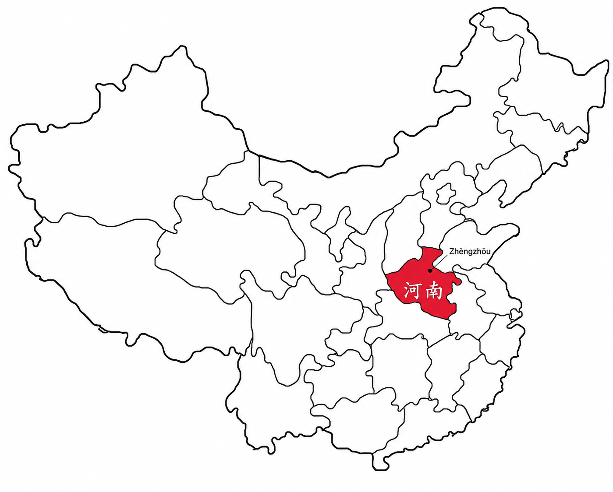
-Zeichen – die Frage nach der ältesten Schrift
Die sogenannte 贾湖 -Schrift aus der Provinz (ca. 6600 v. Chr.) wird gelegentlich als älteste Schrift der Welt bezeichnet. Belegt sind jedoch nur rund 16 eingeritzte Markierungen auf Schildkrötenpanzern und Knochen. Ob sie überhaupt Sprache abbilden, ist ungeklärt: Es fehlen Zeichenreihen, Wiederholungen und ein erkennbares System. Die Forschung spricht deshalb vorsichtiger von Proto-Schrift oder von Zeichenmarken.
Fundkontext. Die neolithische Siedlung 贾湖 im Kreis , Provinz 河南 , gehört zur -Kultur (ca. 7000–5700 v. Chr.). Berühmt wurde der Ort auch durch die ältesten spielbaren Musikinstrumente der Welt – Flöten aus Kranichknochen – und durch den frühesten chemischen Nachweis eines vergorenen Getränks.
Der Befund. Einzelne Ritzungen ähneln optisch späteren Zeichen der Orakelknochenschrift, etwa 目 „Auge“ oder 日 „Sonne“. Zwischen und den ersten gesicherten chinesischen Schriftzeugnissen (ca. 1250 v. Chr.) liegen aber über fünftausend Jahre ohne nachweisbare Überlieferungskette. Eine direkte Abstammung lässt sich daher nicht behaupten.
Was macht Schrift zur Schrift? In der Schriftforschung gelten vier Kriterien: (1) ein konventionalisierter, begrenzter Zeichenvorrat, (2) die feste Bindung an eine bestimmte Sprache, (3) die Verkettung von Zeichen zu Reihen (Syntax), (4) die regelhafte Wiederverwendung derselben Zeichen. erfüllt allenfalls das erste Kriterium ansatzweise.
Epochenbegriffe. Die Urgeschichte (Vorgeschichte, Prähistorie) reicht von den ersten Steinwerkzeugen vor rund 2,5 Millionen Jahren bis zum – regional sehr unterschiedlichen – Einsetzen von Schriftzeugnissen; sie wird ausschließlich archäologisch erschlossen. In der Frühgeschichte liegen Schriftquellen vor, ergeben aber ohne Archäologie noch kein hinreichendes Geschichtsbild. Erst in der Geschichte im engeren Sinne überwiegt die Auswertung schriftlicher Quellen. Der Beginn der Schrift ist damit zugleich eine Epochengrenze der Menschheitsgeschichte.
- Proto-Schrift – Zeichengebrauch ohne nachweisbare Bindung an eine Sprache
- -Kultur – neolithische Kultur am Gelben Fluss, ca. 7000–5700 v. Chr.
- Urgeschichte / Frühgeschichte / Geschichte i. e. S. – Epochengliederung nach Quellenlage
Ornament oder Schrift? · Südosteuropa, ca. 5300 v. Chr.
- 85 % der Funde tragen nur ein einziges Zeichen.
- In den seltenen Zeichenreihen wiederholen sich die Symbole kaum.
- Wahrscheinlicher: geometrische Muster, Besitzer- oder Kultmarken.
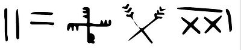
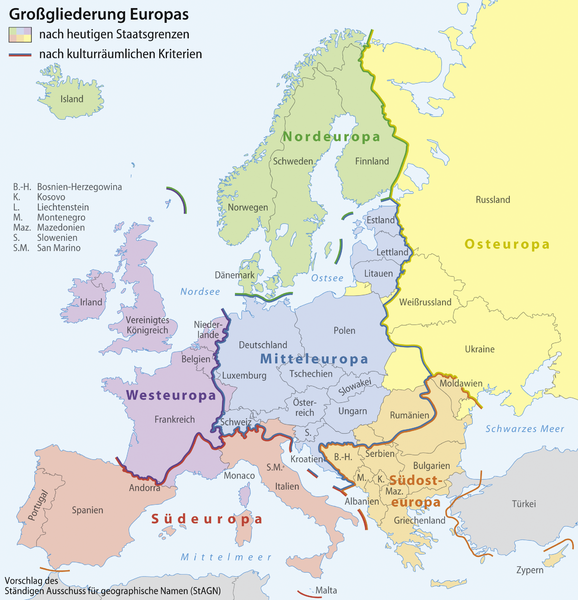
Vinča-Zeichen – Ornament oder Schrift?
Die Vinča-Zeichen (ca. 5300 v. Chr.) stammen aus Südosteuropa; der namengebende Fundort Vinča ist heute ein Vorort von Belgrad, der Hauptstadt Serbiens. Auch hier ist umstritten, ob es sich um Schrift handelt: 85 % der Funde tragen nur ein einziges Zeichen, und in den seltenen Zeichenreihen wiederholen sich die Symbole kaum. Wahrscheinlicher sind geometrische Muster, Besitzer- oder Kultmarken auf Skulpturen und Kultgegenständen.
Die Vinča-Kultur (ca. 5400–4500 v. Chr.) erstreckte sich über das heutige Serbien, Rumänien, Bulgarien und Ungarn. Sie war metallurgisch weit entwickelt und hinterließ Tausende von Tonfiguren. Rund 210 verschiedene Zeichenformen sind katalogisiert.
Die Tărtăria-Täfelchen, 1961 in Rumänien gefunden, gelten als spektakulärster Beleg. Da sie jedoch nur wenige Zeichen tragen und der Fundkontext umstritten ist, tragen sie zur Beweisführung wenig bei.
Das methodische Problem ist dasselbe wie bei : Ohne längere Zeichenketten lässt sich nicht prüfen, ob die Zeichen Sprache kodieren. Der von Marija Gimbutas geprägte Begriff einer „alteuropäischen Schrift“ wird in der Fachwissenschaft überwiegend abgelehnt.
Didaktischer Ertrag. und Vinča zeigen: Zeichen sind älter als Schrift. Menschen markieren, zählen und symbolisieren seit dem Neolithikum – Schrift entsteht erst, wenn Zeichen an gesprochene Sprache gekoppelt werden.
- Vinča – Fundort bei Belgrad (Serbien), Namensgeber der Kultur
- Tărtăria-Täfelchen – drei Tontafeln mit Zeichen, Rumänien 1961
- Zeichenmarke vs. Schriftzeichen – Markierung ohne Sprachbezug vs. sprachgebundenes Zeichen
Zweimal erfunden Keilschrift ca. 3300 v. Chr. · Hieroglyphen ca. 3200 v. Chr.
- Die Keilschrift entsteht bei den Sumerern in Mesopotamien — dem heutigen Irak.
- Die Hieroglyphen entstehen in Ägypten.
- Auslöser war die Verwaltung: Besitz und Abgaben ließen sich nicht mehr aus dem Gedächtnis regeln.
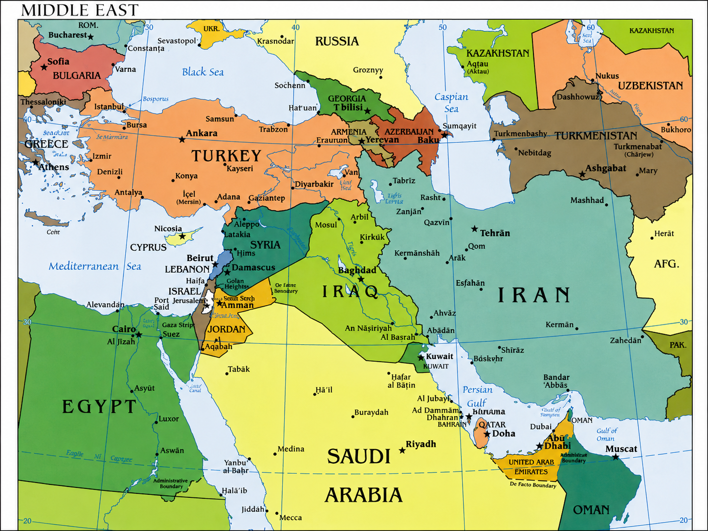
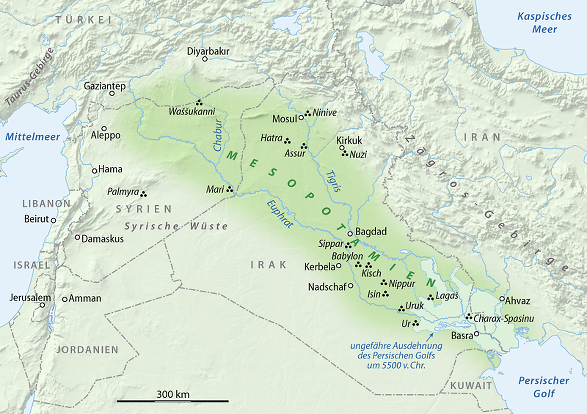
Die ersten Schriftsysteme: Mesopotamien und Ägypten
Weitgehend anerkannt ist, dass die ersten voll entwickelten Schriften bei den Sumerern in Mesopotamien (≈ heutiger Irak) und in Ägypten entstanden: die Keilschrift um ca. 3300 v. Chr., die Hieroglyphen um ca. 3200 v. Chr. Auslöser war die Verwaltung: Besitzverhältnisse und Abgaben ließen sich in wachsenden Städten nicht mehr mündlich und aus dem Gedächtnis regeln. Der Mensch begann Buch zu führen.
Datierung. Die früher verbreitete Angabe „ca. 5000 v. Chr.“ ist überholt. Die ältesten beschrifteten Tontafeln stammen aus der Schicht Uruk IV (ca. 3300 v. Chr.); die ältesten ägyptischen Hieroglyphen aus dem Grab U-j in Abydos (ca. 3200 v. Chr.). Die Kulturen der Akkader, Babylonier und Assyrer übernahmen die Keilschrift später von den Sumerern.
Vorgeschichte der Keilschrift. Bereits ab ca. 8000 v. Chr. verwendete man im Vorderen Orient kleine Tonmarken (tokens) als Zählsteine. Sie wurden in Tonhüllen (bullae) eingeschlossen und außen abgebildet – der Schritt vom dreidimensionalen Rechenstein zur zweidimensionalen Zeichnung. Aus diesen Abdrücken entstanden Piktogramme auf Tafeln.
Wie oft wurde Schrift erfunden? Man rechnet mit drei bis vier voneinander unabhängigen Erfindungen: Mesopotamien (ca. 3300 v. Chr.), Ägypten (ca. 3200 v. Chr., ggf. durch Mesopotamien angeregt), China (ca. 1250 v. Chr.) und Mesoamerika (ca. 900–600 v. Chr.). Alle anderen Schriften der Welt sind Übernahmen oder Anregungen aus diesen Zentren.
Gemeinsames Motiv. In allen Fällen steht am Anfang nicht die Literatur, sondern die Buchhaltung: Ein- und Ausgaben, Rationen, Tempelbesitz. Ihre schriftliche Fixierung half, Interessen auseinanderzuhalten und Rechtsstreitigkeiten vorzubeugen.
- Mesopotamien – „Land zwischen den Strömen“ (Euphrat und Tigris), heute Irak
- Uruk IV – archäologische Schicht mit den ältesten Schrifttafeln
- Tokens / Bullae – Zählsteine und ihre Tonhüllen als Vorstufe der Schrift
Ein Schilfrohr im feuchten Ton Schrift als Instrument der Verwaltung, nicht der Dichtung
- Das angeschrägte Ende eines Schilfrohrs wird in weichen Ton gedrückt — daher der keilförmige Abdruck.
- Die Tafeln zeigen: Rechensystem, Zahlungsmittel, Zinsen, Darlehen.
- Auch Eigentumsurkunden sind belegt.
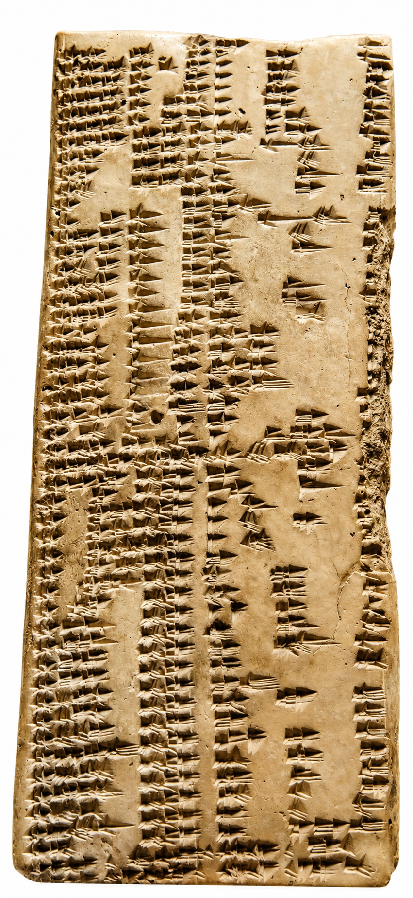
Keilschrift: Technik, Wirtschaft und Verwaltung
Mit dem angeschrägten Ende eines Schilfrohrs wurden Zeichen in feuchten Ton gedrückt – daher die keilförmigen Abdrücke. Die Tafeln zeigen, dass die Sumerer ein Rechensystem und Zahlungsmittel besaßen, Zinsen und Darlehen kannten und Eigentumsurkunden ausstellten. Schrift entstand hier als Instrument der Verwaltung, nicht der Dichtung.
Vom Bild zum Keil. Anfangs wurden Zeichen mit einem spitzen Griffel in den Ton geritzt. Da geschwungene Linien den Ton aufwerfen, ging man zum Eindrücken eines kantigen Griffels über. Aus Bildern wurden Kombinationen keilförmiger Grundeinheiten – die Bildhaftigkeit ging verloren, die Schreibgeschwindigkeit stieg. Ein Materialzwang veränderte das Aussehen der Schrift; dasselbe Phänomen begegnet später in China beim Übergang zu Pinsel und Papier.
Das Rebusprinzip. Entscheidend war der Schritt vom Bild zum Laut: Ein Zeichen wurde nicht mehr für seine Bedeutung, sondern für seinen Klang verwendet – so wie im Deutschen ein Auge plus eine Nadel „Augnadel“ ergäbe. Damit konnte man Namen und abstrakte Wörter schreiben. Aus der Keilschrift wurde ein gemischtes Logogramm-Silben-System mit rund 600 gebräuchlichen Zeichen.
Das Sexagesimalsystem. Die Sumerer rechneten im Sechzigersystem. Es lebt bis heute in Stunde, Minute, Sekunde und in der Kreisteilung in 360 Grad fort.
Reichweite und Ende. Die Keilschrift wurde über 3000 Jahre für sehr verschiedene Sprachen genutzt: Sumerisch, Akkadisch, Elamisch, Hethitisch, Altpersisch. Entziffert wurde sie im 19. Jahrhundert – Georg Friedrich Grotefend und Henry Rawlinson (Behistun-Inschrift). Die letzte bekannte Keilschrifttafel datiert um 75 n. Chr.
- Rebusprinzip – Verwendung eines Zeichens wegen seines Lautwerts, nicht seiner Bedeutung
- Sexagesimalsystem – Zahlensystem zur Basis 60
- Behistun-Inschrift – dreisprachige Felsinschrift, Schlüssel zur Entzifferung
Heilige eingemeißelte Zeichen Griechisch „heilige Einmeißelungen" · ägyptisch medu netjer — „Gottesworte"
- Nach ägyptischer Vorstellung eine Gabe des Gottes Thot.
- In Stein gemeißelt auf Tempelwänden, Obelisken und Sarkophagen.
- Zuerst eine sakrale Monumentalschrift — an die Götter gerichtet.
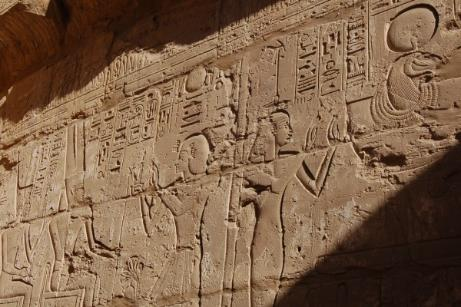
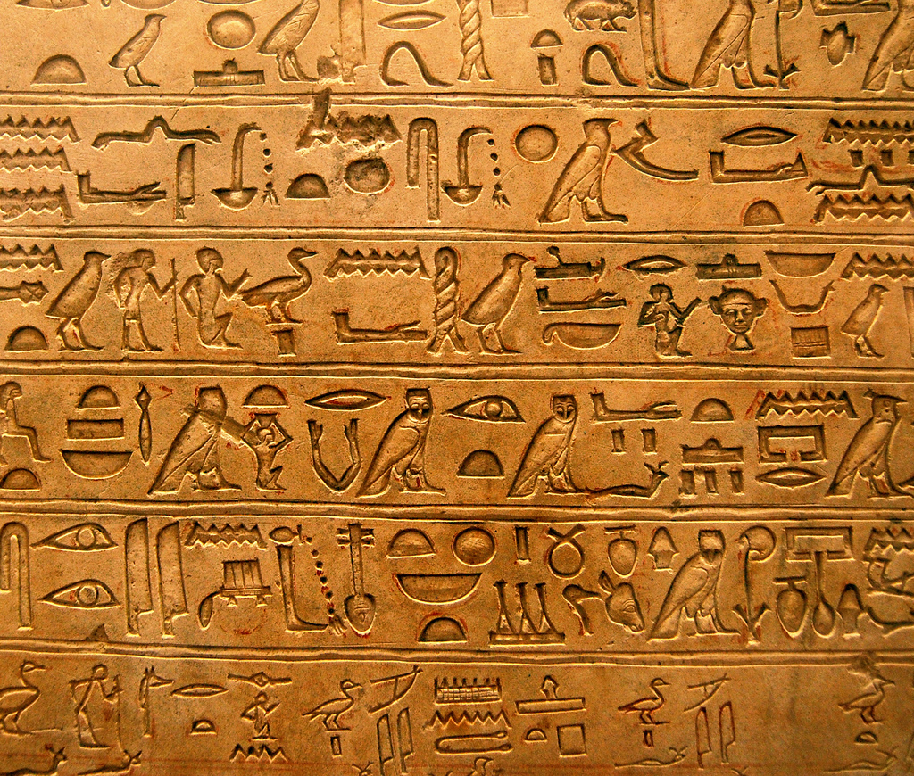
Ägyptische Hieroglyphen – „heilige Einritzungen“
Das griechische Wort bedeutet „heilige eingeritzte Zeichen“; die ägyptische Eigenbezeichnung lautete mdw nṯr – „Gottesworte“. Nach ägyptischer Vorstellung war die Schrift eine Gabe des Gottes Thot, der sie den Menschen beibrachte. In Stein gemeißelt auf Tempelwänden, Obelisken und Sarkophagen richteten sich die Ägypter an ihre Götter: Hieroglyphen waren zuerst eine sakrale Monumentalschrift.
Kein reines Bilderschriftsystem. Der Eindruck einer reinen Bilderschrift täuscht. Bereits die frühesten Hieroglyphen verbinden drei Zeichentypen: Phonogramme (Lautzeichen für einen, zwei oder drei Konsonanten), Logogramme (Wortzeichen) und Determinative (stumme Deutzeichen, die das Bedeutungsfeld angeben). Diese Dreiteilung entspricht strukturell dem, was in China Signifikum und Phonetikum leisten.
Keine Vokale. Geschrieben wurden nur Konsonanten. Die heute übliche Aussprache ägyptischer Namen ist eine Hilfskonstruktion mit eingefügtem „e“.
Leserichtung. Hieroglyphen konnten von links nach rechts, von rechts nach links oder in Kolumnen geschrieben werden. Die Blickrichtung der abgebildeten Menschen und Tiere zeigt an, wo die Zeile beginnt – man liest den Figuren „entgegen“.
Ästhetik als Prinzip. Die Zeichen wurden in quadratische Gruppen gesetzt und der Architektur angepasst. Schrift war in Ägypten immer auch Bildkunst – ein Zug, der sie mit der chinesischen Kalligraphie verbindet.
Entzifferung. Der 1799 gefundene Stein von Rosette mit einem dreifach geschriebenen Text (Hieroglyphen, Demotisch, Griechisch) ermöglichte Jean-François Champollion 1822 die Entzifferung.
- Thot – ibisköpfiger Gott der Schrift und Weisheit
- Determinativ – nicht gesprochenes Zeichen zur Bedeutungsklärung
- Stein von Rosette – dreisprachige Stele, 1799, Schlüssel zur Entzifferung
Vom Bild zum Laut Eine Hieroglyphe steht für ein Wort — oder für einen einzelnen Laut
- Mit dem Verwaltungsbedarf wächst der Druck: Es wird eine raschere Form des Schreibens gebraucht.
- Deshalb erhalten Zeichen eine lautliche Zuordnung — ein Zeichen entspricht einem Laut.
- Eine Hieroglyphe ist damit Symbol für ein Wort oder für einen Laut: ein Phonogramm.
- In dieser Funktion sind Hieroglyphen den Buchstaben der Alphabetschriften vergleichbar.
Weil das Meißeln zu umständlich blieb, entsteht ab dem 2. Jahrtausend v. Chr. die hieratische Kursive — die nächste Folie.
Drei Register einer Schrift Monumental, Verwaltung, Alltag — nebeneinander, nicht nacheinander
- Hieratisch: Kursive mit dem Binsenpinsel auf Papyrus, für Verwaltung und Religion.
- Demotisch: ab dem 7. Jahrhundert v. Chr., noch stärker abgekürzt.
- Die Zeichen werden stilisierter — die Schrift verliert an Bildhaftigkeit, gewinnt an Tempo.
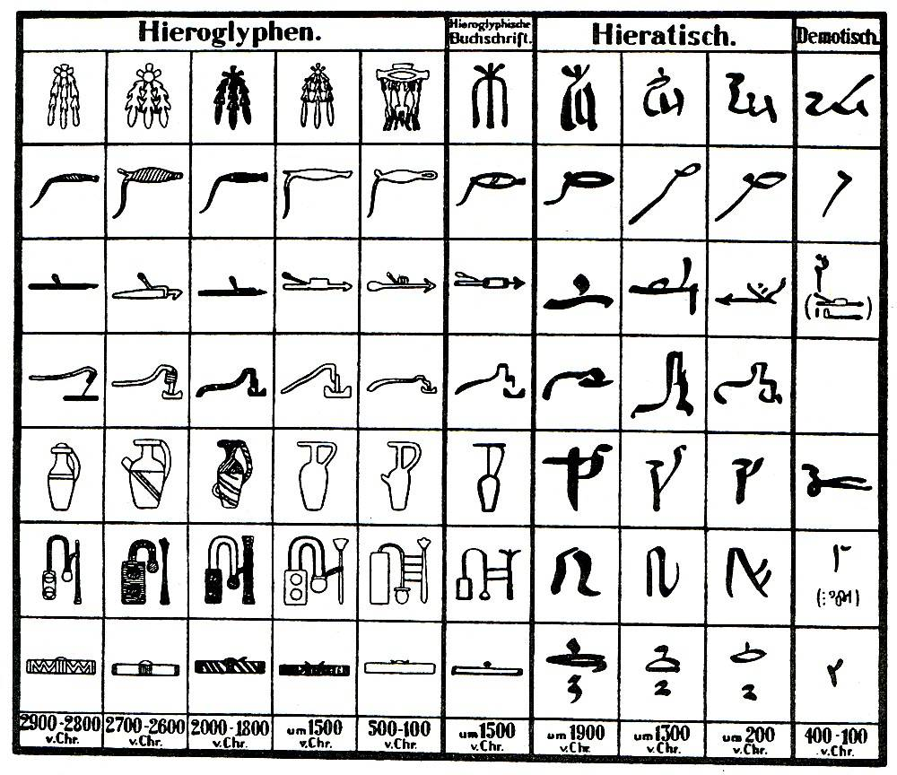
Von der Bildhaftigkeit zur Lautschrift: hieratisch und demotisch
Monumentale Hieroglyphen waren umständlich und zeitraubend. Für den Alltag entstand deshalb die hieratische Schrift, eine mit dem Binsenpinsel auf Papyrus geschriebene Kursive. Ab dem 7. Jahrhundert v. Chr. kam mit dem Demotischen eine weitere, noch stärker abgekürzte Variante hinzu, die zugleich eine eigene Sprachstufe abbildete. Die Zeichen wurden stilisierter und abstrakter – die Schrift verlor an Bildhaftigkeit und gewann an Genauigkeit und Tempo.
Drei Register einer Schrift. Hieroglyphisch (Stein, sakral, repräsentativ), hieratisch (Papyrus, Verwaltung und Religion), demotisch (Alltag, Recht, Wirtschaft) existierten nebeneinander – nicht nacheinander. Die hieratische Schrift ist bereits seit der 1. Dynastie (um 3000 v. Chr.) belegt, nicht erst ab dem 2. Jahrtausend.
Warum drei? Funktionsvielfalt erzeugt Stilvielfalt. Genau dieselbe Aufspaltung findet sich später in China: Siegelschrift für Repräsentation, Kanzleischrift für Verwaltung, Kursive für den privaten Gebrauch.
Erfolg des Systems. Das ägyptische Schriftsystem blieb über 3000 Jahre in seinen Grundzügen stabil. Eine Hieroglyphe konnte ein ganzes Wort oder einen einzelnen Laut wiedergeben; einige Einkonsonantenzeichen sind den Buchstaben der Alphabetschriften unmittelbar vergleichbar – aus ihnen entwickelte sich später tatsächlich das Alphabet.
Das Ende. Die letzte datierte Hieroglypheninschrift stammt von 394 n. Chr. aus Philae; die letzte demotische von 452 n. Chr. Das Koptische schrieb Ägyptisch schließlich mit griechischen Buchstaben – die Kenntnis der Hieroglyphen ging für 1400 Jahre verloren.
- hieratisch – Priesterkursive, mit Binsenpinsel auf Papyrus
- demotisch – „volkstümliche“ Gebrauchsschrift ab ca. 650 v. Chr.
- Koptisch – Ägyptisch in griechischer Buchstabenschrift, ab dem 3. Jh. n. Chr.
Der Beschreibstoff Papyrus Die Stängel der Papyrospflanze werden zerfasert
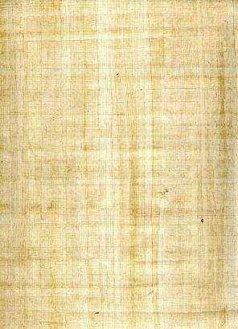
- Die Stängel werden geschält, in dünne Streifen zerfasert und kreuzweise gelegt.
- Gepresst und getrocknet verbinden sich die Fasern zu einem Blatt.
- Papyrus bleibt für drei Jahrtausende der Schreibstoff des Mittelmeerraums.
Das fertige Blatt
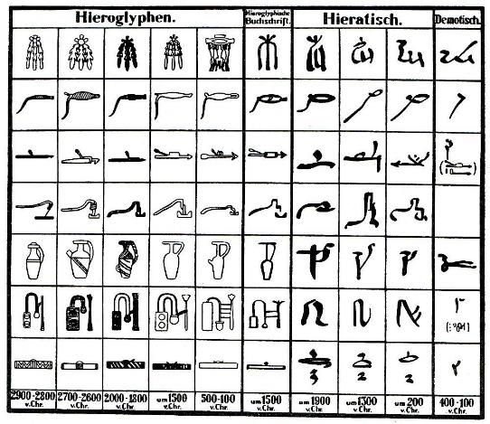
Die Erfindung des Alphabets Ugarit um 1500 v. Chr. · phönizisches Abjad ab ca. 1050 v. Chr.
- In Ugarit entsteht ein Alphabet aus 30 Keilschriftzeichen.
- Verbreitet wird das Prinzip durch die Phönizier — ein Seefahrervolk.
- Ihr Alphabet aus 22 Zeichen kennt keine Vokale.
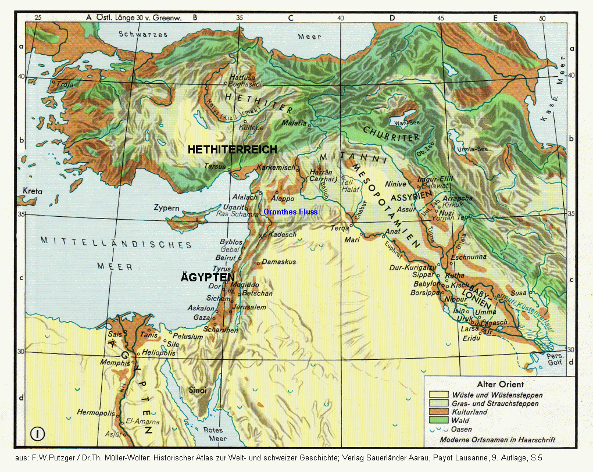
Die Erfindung des Alphabets und die Phönizier
Um 1500 v. Chr. entstand in Ugarit an der syrischen Küste ein Alphabet aus 30 Keilschriftzeichen – eine der frühesten alphabetischen Schriften überhaupt. Verbreitet wurde das Prinzip jedoch durch die Phönizier, ein Seefahrervolk im Gebiet des heutigen Syrien und Libanon. Ihr Alphabet aus 22 Zeichen kannte keine Vokale. Die Phönizier zerlegten ihre Sprache in Laute, ordneten ihnen Buchstaben zu und konnten sie beim Lesen wieder in Laute zurückverwandeln.
Wichtige Präzisierung. Das ugaritische Alphabet ist nach heutigem Forschungsstand nicht der Vorgänger des phönizischen, sondern eine eigenständige Parallelentwicklung. Der gemeinsame Ursprung liegt in der protosinaitischen Schrift (ca. 1900–1700 v. Chr., Serabit el-Chadim auf dem Sinai und Wadi el-Hol in Ägypten): Semitische Arbeiter übernahmen ägyptische Hieroglyphen und gaben ihnen nach dem akrophonen Prinzip neue Lautwerte.
Akrophonie. Ein Bildzeichen steht für den Anlaut seines semitischen Namens: Das Bild eines Rinderkopfes (ʾalp „Rind“) steht für den Laut /ʾ/, das Bild eines Hauses (bet) für /b/. Aus rund 30 Zeichen wird so ein vollständiges Schriftsystem.
Abjad statt Alphabet. Das phönizische System (ab ca. 1050 v. Chr.) notiert nur Konsonanten; man nennt es fachsprachlich Abjad. Erst die Griechen ergänzten Vokalzeichen und schufen damit das Alphabet im engeren Sinne.
Die Nachkommen. Arabische, hebräische, griechische, lateinische und kyrillische Schriften sind weiterentwickelte, in die jeweilige Kultur übertragene Alphabetschriften. Die kyrillische Schrift (Kyrilliza, auch Asbuka nach den ersten beiden Buchstaben az und buki) ist nach Kyrill von Saloniki (826–869) benannt – er entwarf allerdings nicht sie, sondern die ältere glagolitische Schrift; die Kyrilliza entstand erst danach im bulgarischen Preslav.
- protosinaitische Schrift – ältester Vorläufer aller Alphabete, ca. 1900 v. Chr.
- Akrophonie – Zeichen steht für den Anlaut seines Namens
- Abjad – Konsonantenschrift ohne Vokalzeichen
Nicht die Form zählt, die Reihenfolge Abecedarien aus Ras Schamra, um 1400 v. Chr.
- Die Schülertäfelchen belegen bereits die Folge
- Genau diese Reihenfolge lebt über das Phönizische und Griechische bis in unser ABC weiter.
- Eine feste Ordnung macht das Alphabet lernbar, prüfbar und sortierbar.
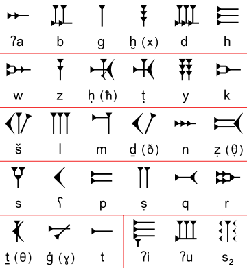
Die ugaritische Zeichentafel und die Ordnung des Alphabets
Die Tabelle zeigt die 30 Zeichen der ugaritischen Schrift und ihre Alphabetordnung. Bemerkenswert daran ist weniger die Zeichenform als die Reihenfolge: Die in Ras Schamra gefundenen Schülertäfelchen (Abecedarien, um 1400 v. Chr.) belegen bereits jene Buchstabenfolge ʾa – b – g – d …, die über das Phönizische und Griechische bis in unser ABC weiterlebt.
Fundort. Ugarit (arabisch Ras Schamra) wurde 1929 an der nordsyrischen Küste entdeckt. Die Stadt war ein internationaler Handelsplatz; im Archiv fanden sich Texte in acht Sprachen und fünf Schriften.
Ein Hybrid. Das Ugaritische verwendet die Technik der Keilschrift – Abdrücke im Ton – für das Prinzip des Alphabets. Das zeigt anschaulich: Schreibtechnik und Schriftsystem sind voneinander unabhängig. Dieselbe Einsicht erklärt später, warum sich chinesische Zeichen in Knochen, Bronze, Bambus, Seide und Papier so unterschiedlich präsentieren, ohne ihr System zu ändern.
Zwei Alphabetordnungen. Neben der bekannten nordsemitischen Reihe (ʾa-b-g-d) ist in Ugarit auch eine zweite, südsemitische Ordnung (h-l-ḥ-m) belegt; sie lebt im äthiopischen Schriftraum fort.
Warum eine Reihenfolge? Eine feste Ordnung macht das Alphabet lernbar, überprüfbar und – Jahrtausende später – sortierbar. Zeichenschriften wie die chinesische mussten dieses Ordnungsproblem anders lösen: über Radikale und Strichzahl.
- Ras Schamra / Ugarit – Fundort in Nordsyrien, entdeckt 1929
- Abecedarium – Schülertafel mit dem Alphabet in fester Reihenfolge
Der Weg nach Europa Um 800 v. Chr. übernehmen die Griechen das System
- Mit 26 Buchstaben lässt sich praktisch jedes deutsche Wort schreiben.
- Die Griechen ergänzen Vokalzeichen — erst damit ein Alphabet im engeren Sinne.
- hieß „Rind", hieß „Haus" — daraus wurde das Wort Alphabet.
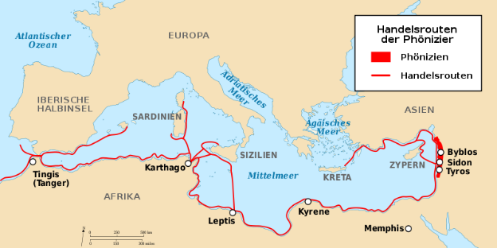
Das Alphabetprinzip und seine Ausbreitung
Die Erfindung des Alphabets beruht auf einer Erkenntnis: Sprache besteht aus wenigen Lauten, die in immer neuen Kombinationen den gesamten Wortschatz wiedergeben können. Mit 26 Buchstaben lässt sich praktisch jedes deutsche Wort schreiben. Damit man sich die Zeichen besser merken konnte, gaben die Phönizier ihnen eine feste Reihenfolge. Die ersten beiden Buchstaben gaben dem System seinen Namen: ʾaleph (griech. alpha) bedeutete „Rind“, bet (griech. beta) „Haus“.
Vom Bild zum Buchstaben. Das A ist ein umgedrehter Rinderkopf, dessen Hörner heute nach unten zeigen. Solche Herkunftsgeschichten lassen sich für die meisten Buchstaben rekonstruieren – ein reizvoller Vergleichspunkt zu den chinesischen Piktogrammen.
Verbreitung durch Handel. Über ihr weitreichendes Handelsnetz (Byblos, Tyros, Sidon, Karthago) beeinflussten die Phönizier ihre Handelspartner. Um 800 v. Chr. übernahmen die Griechen das System und ergänzten es um Vokalzeichen – indem sie überzählige semitische Konsonantenzeichen umwidmeten. Das griechische Alphabet wurde über das etruskische zum Vorbild des lateinischen Alphabets, das wir heute benutzen.
Schreibrichtung. Frühe griechische Inschriften laufen noch boustrophedon – „wie der Ochse pflügt“, abwechselnd hin und her. Erst später setzte sich die Richtung von links nach rechts durch.
Die kulturelle Folge. Ein Alphabet ist in Wochen erlernbar, ein Logogrammsystem in Jahren. Schriftlichkeit war damit nicht länger das Monopol einer Schreiberkaste. Diese „Demokratisierung“ wird häufig mit der Entfaltung von Literatur, Philosophie und Rechtskodifikation in Griechenland in Verbindung gebracht – eine These, die man diskutieren, aber nicht monokausal lesen sollte.
- Akrophonie – siehe Folie „Ugarit und die Phönizier“; Grundlage der Buchstabennamen
- boustrophedon – wechselnde Zeilenrichtung
- Etrusker – Vermittler des griechischen Alphabets nach Rom
Zwei Wege, ein Ziel
- Eine Alphabetschrift erspart das Lernen tausender Zeichen.
- Die chinesische Schrift ist morphosyllabisch: ein Zeichen = eine Silbe = meist ein Morphem.
- Ihr Vorteil: Sprecher von Mandarin und Kantonesisch verständigen sich über die Schrift — wenn auch nicht im Gespräch.
Morphem — kleinste Einheit mit Bedeutung
- „Haus" ist eines; in „Häuschen" stecken drei: Haus + Umlaut + -chen. Im Chinesischen fällt alles zusammen: ein Zeichen = eine Silbe = eine Bedeutung.
A B C D E F G H I J K L M
N O P Q R S T U V W X Y Z
Die Vereinheitlichung der Schrift erfolgte 221 v. Chr.: 书同文 — „gleiche Schrift für alle".
Alphabet und Zeichenschrift im Vergleich
Wer eine Alphabetschrift beherrscht, ist nicht mehr auf die enorme Gedächtnisleistung angewiesen, die etwa 600 Keilschriftzeichen oder mehrere tausend chinesische Zeichen verlangen. In China ging die Abstraktion vom Zeichen zum Laut nicht denselben Weg. Dafür bot die Schrift einen anderen Vorteil: Sprecher verschiedener chinesischer Sprachen – etwa Mandarin und Kantonesisch – können sich über die Schriftzeichen verständigen, wenn auch nicht im Gespräch. Die große Schriftvereinheitlichung von 221 v. Chr. verband die Sprachgemeinschaften und förderte die Geschlossenheit des chinesischen Kulturraums.
Wichtige Präzisierung. Die chinesische Schrift ist keine reine Bild- oder Begriffsschrift und ordnet nicht „jedem Wort ein eigenständiges Zeichen“ zu. Sie ist morphosyllabisch: Ein Zeichen entspricht in aller Regel einer Silbe und zugleich einem Morphem. Über 80 % der Zeichen enthalten außerdem eine Lautkomponente. Die Abstraktion zum Laut hat also stattgefunden – nur nicht bis auf die Ebene des Einzellauts.
Wort und Zeichen sind zu unterscheiden. Die Mehrzahl der modernen Wörter besteht aus zwei Zeichen: 电脑 „Computer“ ist ein Wort aus zwei Morphemen („Elektrizität“ + „Gehirn“). Wer 3000 Zeichen kennt, kennt zehntausende Wörter.
Der dialektübergreifende Vorteil. Das Zeichen 我 wird als (Mandarin), ngo5 (Kantonesisch) oder (Hokkien) gelesen – die Schrift bleibt dieselbe. Diese Eigenschaft war für die Verwaltung eines Vielsprachenreichs von großem Wert und wirkte im Sinne kultureller Integration.
Der Preis. Dem steht ein hoher Lernaufwand gegenüber: Alphabetisierung dauert in China deutlich länger als in alphabetschriftlichen Kulturen. Reformdebatten des 20. Jahrhunderts reichten bis zur vollständigen Latinisierung; durchgesetzt haben sich die Kurzzeichenreform und als Hilfsschrift.
Datum. Die Vereinheitlichung erfolgte 221 v. Chr. unter (书同文 – „gleiche Schrift für alle“), nicht 200 v. Chr.
- morphosyllabisch – ein Zeichen = eine Silbe = i. d. R. ein Morphem
- 书同文 – „die Schrift vereinheitlichen“, Reichspolitik ab 221 v. Chr.
- Morphem – kleinste bedeutungstragende Einheit einer Sprache
Die älteste ununterbrochen gebrauchte Schrift
文字
Seit den Orakelknochen des 13. Jahrhunderts v. Chr. lückenlos belegt — gut 3200 Jahre.
Die chinesische Schrift 文字 – Alter und Ausstrahlung
Die chinesische Schrift 文字 ist die älteste ununterbrochen gebrauchte Schrift der Welt: Seit den Orakelknochen des 13. Jahrhunderts v. Chr. lässt sie sich lückenlos bis heute verfolgen – gut 3200 Jahre, natürlich in stark gewandelter Form. Damit ist sie ein zentraler Träger der chinesischen Kultur. Sie diente zugleich als Grundlage der japanischen, der vietnamesischen und einer der koreanischen Schriften.
Zur Altersangabe. Die häufig genannten „5000–6000 Jahre“ beziehen sich auf neolithische Töpfermarken, deren Schriftcharakter nicht gesichert ist (vgl. Folie „Jiǎhú-Schrift“). Gesichert belegt ist die Schrift ab ca. 1250 v. Chr. Präzise formuliert man: älteste heute noch verwendete Schrift – die Keilschrift ist älter, aber ausgestorben.
Der Begriff. 文 bezeichnete ursprünglich ein Muster oder ein einfaches, nicht weiter zerlegbares Zeichen; 字 das zusammengesetzte Zeichen. Das Zeichen 字 enthält 子 „Kind“ unter einem Dach und bedeutet ursprünglich „gebären, sich vermehren“ – zusammengesetzte Zeichen sind gleichsam die „Nachkommen“ der einfachen.
Die Sinosphäre. In Japan wurden die Zeichen als Kanji übernommen; aus ihren Kursivformen entstanden die Silbenschriften Hiragana und Katakana. In Korea wurden sie als Hanja verwendet, bis König Sejong 1443 das Alphabet Hangul schuf. In Vietnam schrieb man chữ und die daraus entwickelten Eigenzeichen chữ Nôm, heute jedoch lateinisch (Quốc ngữ).
Weitere Ableitungen. Auch die heute ausgestorbenen Schriften der Kitan, Jurchen und Tangut wurden nach chinesischem Vorbild geschaffen – ein Beleg für die Ausstrahlungskraft des Systems.
- 文字 – Schrift, Schriftzeichen
- Sinosphäre – Kulturraum mit chinesischem Schrifteinfluss
- 汉字 – „Han-Zeichen“, chinesische Schriftzeichen
Wie viele Zeichen gibt es? Der Bestand wächst, der Gebrauch nicht
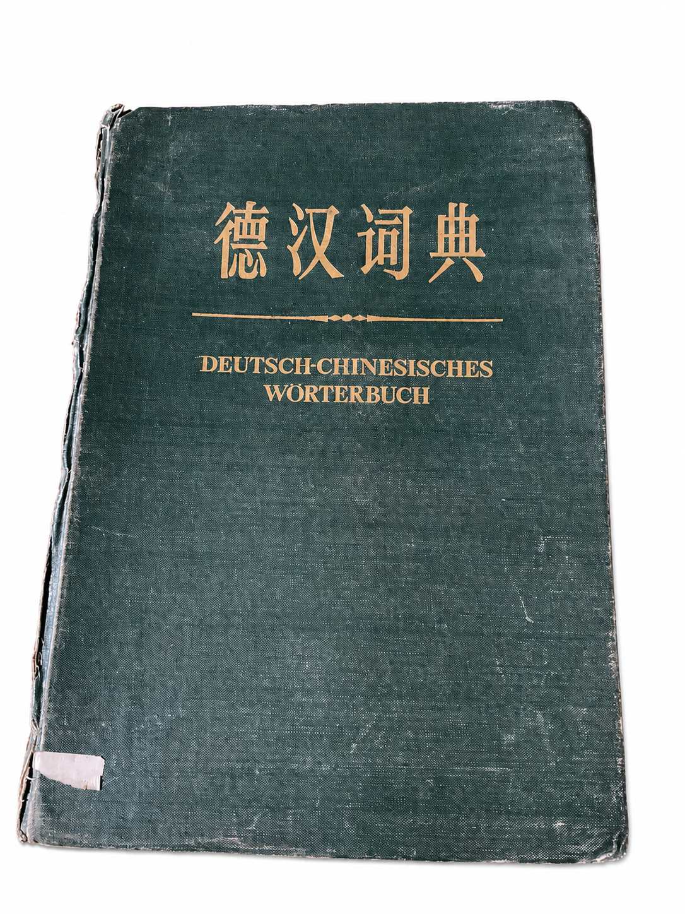
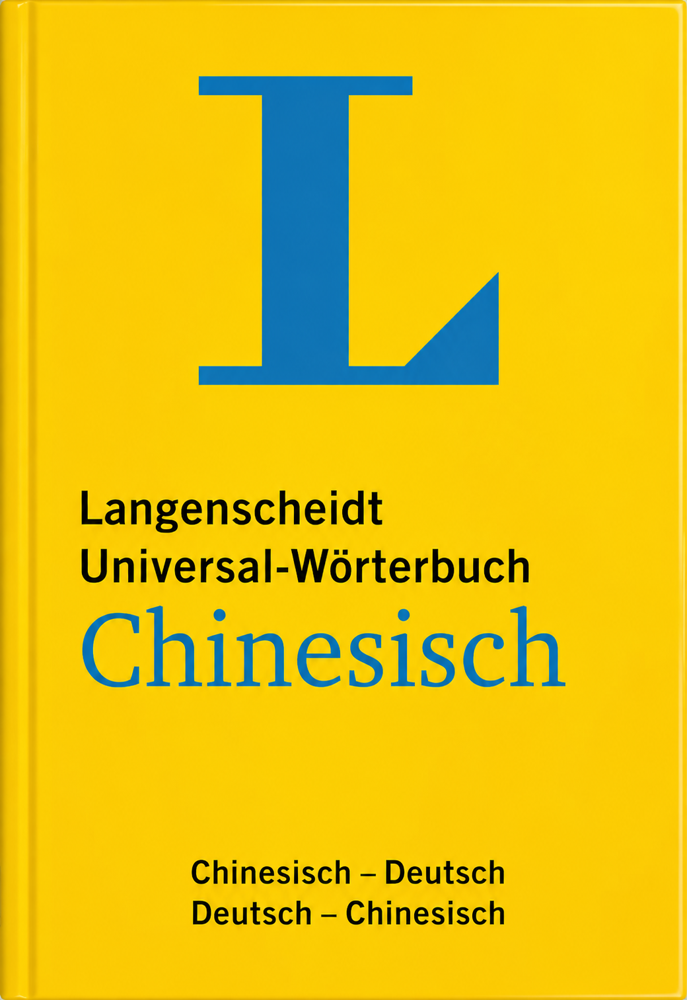
| Werk | Jahr | Zeichen | Radikale |
|---|---|---|---|
| 说文解字 | 100 n. Chr. | 9.353 | 540 |
| 玉篇 | 543 | ca. 16.900 | 542 |
| 康熙字典 | 1716 | ca. 47.000 | 214 |
| 汉语大字典 | 1990 | 54.678 | 200 |
| 中华字海 | 1994 | 85.568 | — |
| Liste der gebräuchlichen Zeichen | 1988 | 3.500 | — |
Rund 85 % sind heute außer Gebrauch. Für den Alltag genügen 3000–5000 Zeichen.
Wörterbücher und Zeichenzahlen
Die Zahl der chinesischen Zeichen wuchs über die Jahrhunderte stetig: von rund 9.400 im 说文解字 (100 n. Chr.) über etwa 47.000 im 康熙字典 (1716) bis zu 85.568 im 中华字海 (1994). Rund 85 % davon sind heute außer Gebrauch und begegnen nur noch in alter Literatur. Für den Alltag genügen 3000–5000 Zeichen; ein durchschnittliches Wörterbuch listet etwa 10.000.
Warum so viele? Die großen Zahlen entstehen durch historische Varianten, regionale Sonderformen, Zeichen für Ortsnamen, Familiennamen und alte Fachbegriffe. Der produktive Bestand war zu keiner Zeit so groß.
Häufigkeitsverteilung. Die Zeichen sind extrem ungleich verteilt. Die 1.000 häufigsten decken rund 90 % eines beliebigen modernen Textes ab, die 2.400 häufigsten etwa 99 %, die 3.500 häufigsten rund 99,7 %. Das erklärt, warum ein überschaubares Lernpensum zu funktionaler Lesefähigkeit führt.
Bezugsgrößen für den Unterricht. Die amtliche Liste der gebräuchlichen Zeichen von 1988 umfasst 3.500 Zeichen (2.500 häufige, 1.000 weniger häufige). Der HSK deckt in seiner neuen Fassung ebenfalls rund 3.000 Zeichen ab.
Hinweis zur Schreibung. Der Titel lautet 中华字海 – „Zeichenmeer Chinas“, mit 字 „Zeichen“, nicht 子 .
- 字典 – Zeichenwörterbuch (Einzelzeichen)
- 词典 – Wörterbuch (Wörter, Mehrzeichenausdrücke)
Wie viele Zeichen braucht man?
- Schulkinder lernen etwa 3000 Zeichen in den ersten sechs Schuljahren — das genügt für Bücher und Zeitungen.
- Wer mehr als 1500 Zeichen beherrscht, gilt nicht als Analphabet.
- Gebildete Chinesen beherrschen rund 6000 Zeichen.
- Mit den 3500 häufigsten Zeichen liest man 99,7 % eines Textes.
Der älteste gesicherte Beleg 甲骨文 · Shang-Dynastie, Inschriften ab ca. 1250 v. Chr.
- Geritzt in Schildkrötenpanzer und Rinderschulterblätter.
- Etwa 4.500 verschiedene Zeichen sind belegt.
- Sie zeigen die heutigen Schriftzeichen in ihrer ursprünglichen Form.
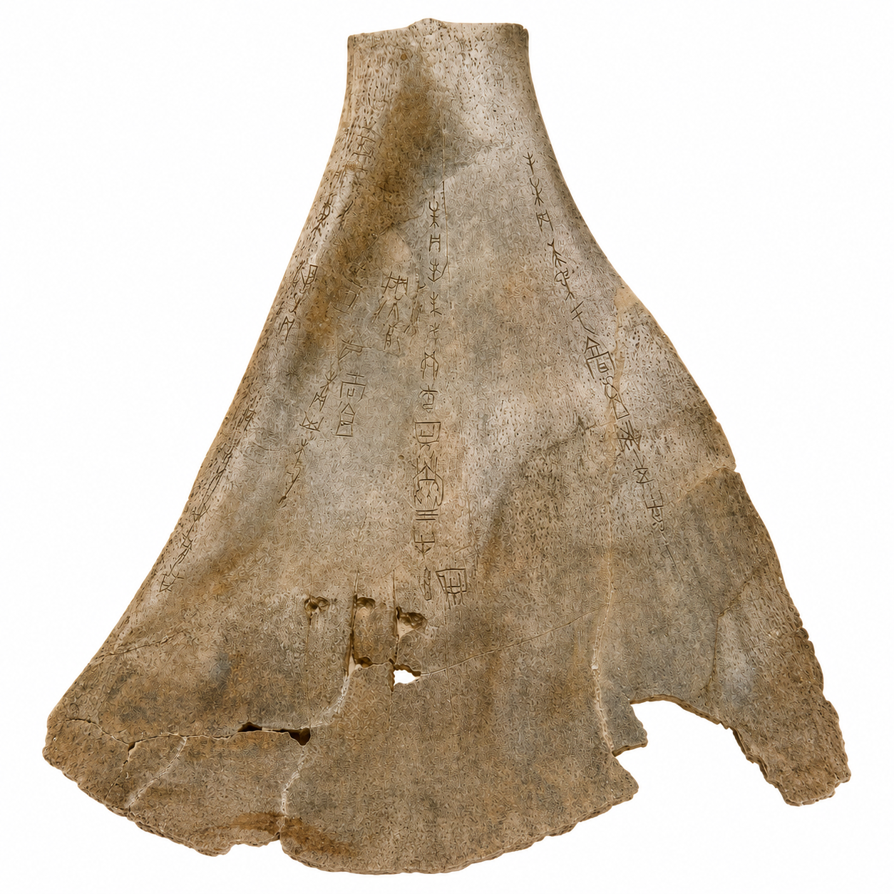
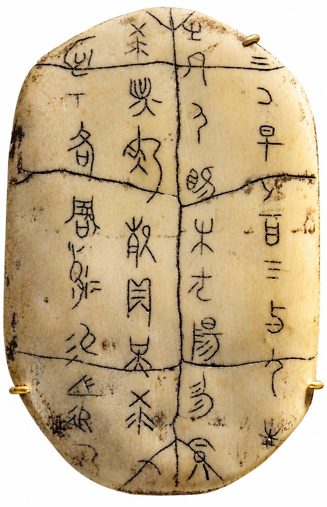
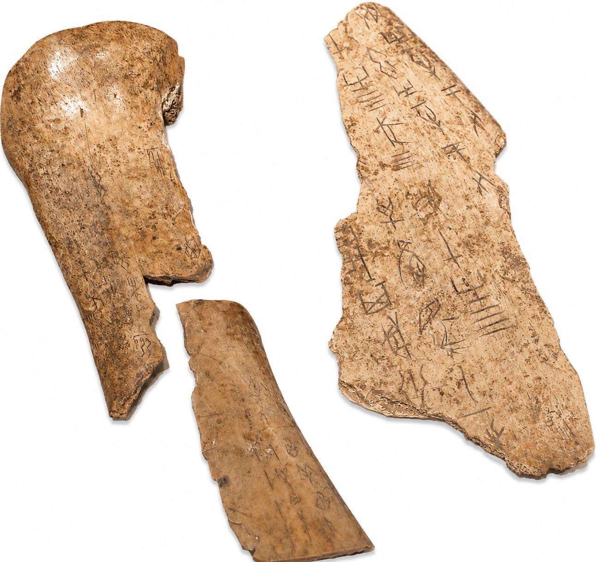
Orakelknochenschrift 甲骨文 – der älteste gesicherte Beleg
Die Orakelknochenschrift 甲骨文 der Shang-Dynastie ist die älteste gesicherte Form der chinesischen Schrift. Zeichen wurden in Schildkrötenpanzer und Tierknochen – meist Rinderschulterblätter – geritzt. Etwa 4.500 verschiedene Zeichen sind belegt, viele davon als Piktogramme. Sie stellen die heutigen Schriftzeichen in ihrer ursprünglichen Form dar und haben eine lange Evolution hinter sich.
Datierung. Die Shang-Dynastie wird auf ca. 1600–1045 v. Chr. datiert; die Orakelinschriften selbst setzen jedoch erst unter König um 1250 v. Chr. ein und reichen bis etwa 1050 v. Chr.
Das Verfahren. In die vorbereiteten Knochen wurden Vertiefungen gebohrt und mit einem glühenden Stab erhitzt. Aus den entstehenden Sprüngen las der Orakelpriester die Antwort. Gefragt wurde nach Ernte, Wetter, Krankheit, Ausgang von Schlachten, Opferterminen und Träumen. Eine vollständige Inschrift umfasst Datum und Namen des Orakelpriesters, die Frage, die Deutung des Königs und häufig die spätere Bestätigung.
Entdeckung. 1899 erkannte der Gelehrte in „Drachenknochen“ aus einer Apotheke – gemahlen als Heilmittel verkauft – alte Schriftzeichen. Der Fundort ist 殷墟 , die letzte Shang-Hauptstadt bei in ; seit 2006 UNESCO-Welterbe. Über 150.000 beschriftete Fragmente sind bekannt, etwa 1.500–2.000 Zeichen sind sicher gelesen.
Ein ausgereiftes System. Bereits die Orakelknochenschrift enthält alle sechs Zeichenbildungstypen einschließlich der Phonogramme. Die Schrift war 1250 v. Chr. also längst kein Anfangsstadium mehr – die Vorstufen fehlen uns schlicht, vermutlich weil sie auf vergänglichen Materialien wie Bambus oder Holz standen.
Piktogramm. Von lateinisch pictum „gemalt, Bild“ und griechisch „schreiben“: ein einzelnes Symbol, das eine Information durch vereinfachte grafische Darstellung vermittelt.
- 甲骨文 – „Panzer-Knochen-Schrift“
- 殷墟 – „Ruinen von Yin“, Fundort bei
- Pyromantie – Weissagung aus Hitzesprüngen
Schrift für die Ewigkeit 金文 · ca. 1300–256 v. Chr.
- Auf rituellen Bronzegefäßen — Glocken 钟 und Opferkesseln 鼎.
- Die Zeichen wurden mitgegossen, nicht geritzt: runde, volle Striche.
- Etwa 5.000–6.000 Zeichenformen sind gesammelt.
Mitgegossen — wie geht das?
- Um ein Tonmodell des Gefäßes werden Mantelteile geformt; das abgeschabte Modell wird zum Kern.
- Die Zeichen schneidet man seitenverkehrt in Mantel oder Kern — vor dem Guss.
- Die flüssige Bronze füllt den Spalt dazwischen: Die Schrift entsteht mit dem Gefäß, nicht danach.
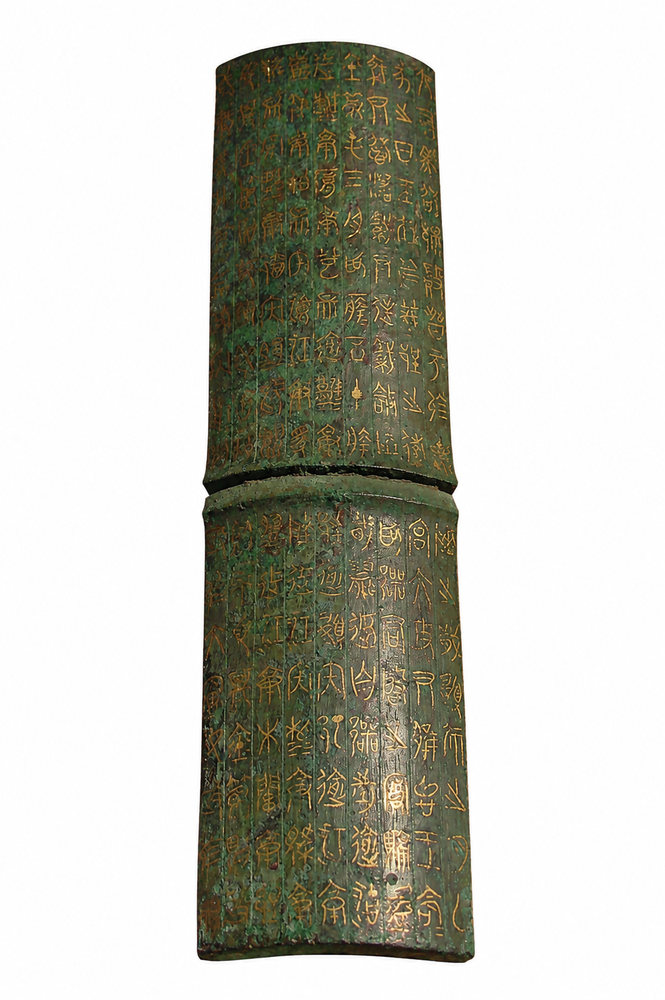
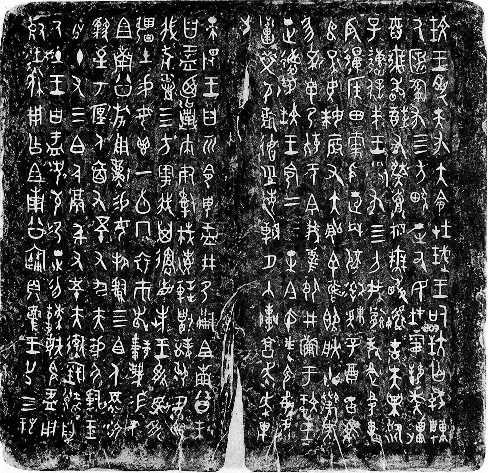
Bronzeschrift 金文 – Schrift für die Ewigkeit
Die Bronzeschrift 金文 erscheint auf rituellen Bronzegefäßen der späten Shang- und der Zhou-Zeit (ca. 1300–256 v. Chr.), vor allem auf Glocken 钟 und Opferkesseln 鼎 – daher auch der Name 钟鼎文 . Die Inschriften dienten Opferzeremonien und dem Ahnenkult. Bisher wurden etwa 5.000–6.000 Zeichenformen der Bronzeschrift gesammelt.
Technik statt Ritzung. Die Zeichen wurden in der Regel mitgegossen: Man schnitt sie seitenverkehrt in den Formmantel oder erhaben in den Kern. Daraus folgt das charakteristische Aussehen – runde, oft keulenförmig verdickte Striche, breite Flächen, große Variationsbreite. Wo Orakelknochenzeichen dünn und eckig sind, weil sie mit dem Messer geritzt wurden, sind Bronzezeichen voll und rund.
Inhalte. Anders als die knappen Orakelfragen sind Bronzeinschriften oft ausführliche Urkunden: Belehnungen, Landschenkungen, Feldzugsberichte, Rechtsfälle und Widmungen an die Ahnen. Der 毛公鼎 trägt mit 497 Zeichen die längste bekannte Inschrift.
Historischer Wert. Da die Inschriften ausdrücklich „für zehntausend Generationen“ bestimmt waren, sind sie eine erstrangige Quelle für die Zhou-Geschichte – vielfach zuverlässiger als spätere Überlieferungstexte.
Übergang. Aus der späten Bronzeschrift entwickelt sich die große Siegelschrift 大篆 , die in der Zeit der Streitenden Reiche regional auseinanderläuft.
- 金文 – „Metallschrift“, Bronzeinschriften
- 鼎 – dreibeiniger Opferkessel, Machtsymbol
- 大篆 – große Siegelschrift
Die erste Standardisierung Kleine Siegelschrift 小篆 · ab 221 v. Chr.
- In der Zeit der Streitenden Reiche (475–221 v. Chr.) schrieb jede Region anders.
- Nach der Reichseinigung wird auf Grundlage der großen Siegelschrift der landesweite Standard entwickelt.
- Geeignet zum Meißeln in Stein — und bis heute für Siegel.
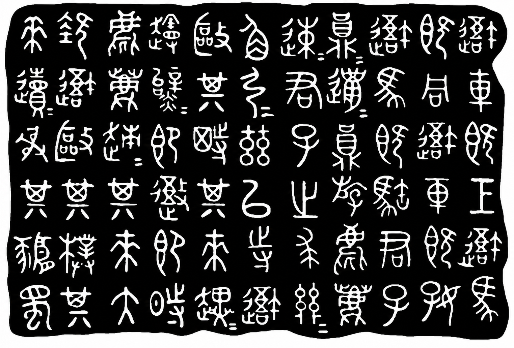
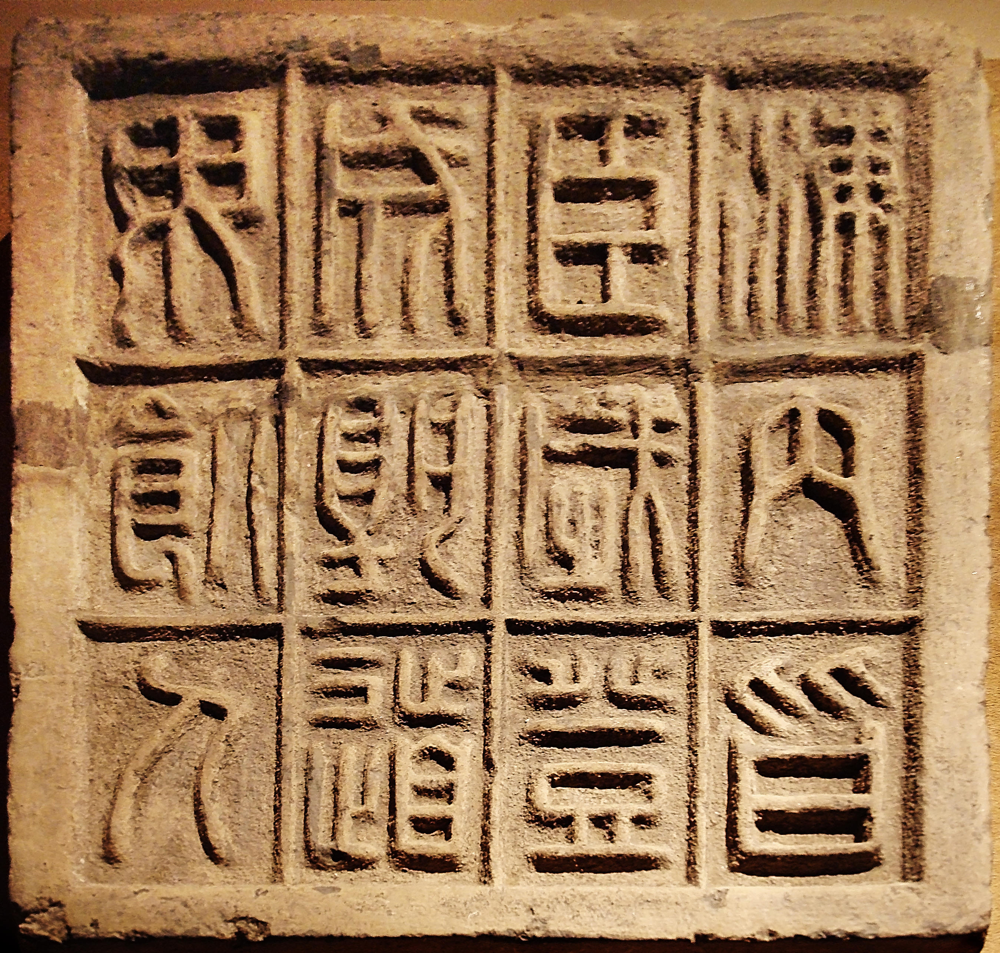
Siegelschrift 篆书 – die erste Standardisierung
In der Zeit der Streitenden Reiche (475–221 v. Chr.) hatten sich die Schriften der Regionen deutlich auseinanderentwickelt. Nach der Reichseinigung durch Kaiser wurde auf Grundlage der großen Siegelschrift des Qin-Staates die kleine Siegelschrift 小篆 als landesweiter Standard entwickelt. Sie eignete sich zum Schneiden und Meißeln in Stein – für Inschriften auf Steltafeln und Grabsteinen – und wurde zugleich für amtliche Dokumente verwendet.
Die Reform. Verantwortlich war Kanzler 李斯 . Die Vereinheitlichung der Schrift (书同文 ) gehörte zu einem Bündel von Standardisierungen – zusammen mit Maßen, Gewichten und der Spurweite der Wagen (车同轨 ). Schriftpolitik war Reichspolitik.
Formmerkmale. Die kleine Siegelschrift strebt gleich große Zeichen an: Die Linien sind durchgehend gleich stark, streng, standardisiert und leicht gebogen; die Zeichen stehen in einem hochrechteckigen Feld und sind weitgehend symmetrisch. Mit Pinsel und Tusche ist sie nur langsam zu schreiben.
Deshalb das Siegel. Gerade ihre Strenge macht sie ideal für Siegel 印章 , die man unter Urkunden und Briefe setzt und die in Ostasien die Funktion der Unterschrift erfüllen. Bis heute werden Siegel in Siegelschrift geschnitten – ebenso wie das Emblem der Olympischen Spiele 2008 in Peking.
Wissenschaftliche Bedeutung. Das erste systematische Zeichenlexikon, das 说文解字 (100 n. Chr.), analysiert die Zeichen in ihrer Siegelschriftform. Wer die Etymologie eines Zeichens verstehen will, geht bis heute auf diese Form zurück.
- 小篆 – kleine Siegelschrift, Reichsstandard ab 221 v. Chr.
- 李斯 – Kanzler , Urheber der Reform
- 印章 – Siegel; ersetzt in Ostasien die Unterschrift
Vier Stile, bis heute in Gebrauch Han-Zeit, 206 v. Chr. – 220 n. Chr.
- 隶书 — Kanzleischrift, Verwaltung
- 楷书 — Regelschrift, Druck
- 行书 — Halbkursive, Handschrift
- 草书 — Grasschrift, Kunst
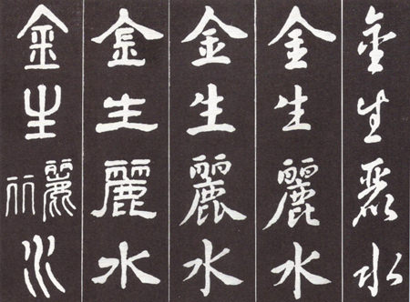
Die vier Schriftstile der Han-Zeit
In der Han-Zeit (206 v. Chr. – 220 n. Chr.) entstanden vier Schriftstile, die bis heute geschrieben werden: die Kanzleischrift 隶书 , die Regelschrift 楷书 , die Halbkursive 行书 und die Grasschrift 草书 . Sie lösten einander nicht ab, sondern verteilten sich auf unterschiedliche Funktionen: Verwaltung, Druck, Handschrift und Kunst.
Kanzlei- oder Kurialschrift 隶书 (jap. Reishu). Der Überlieferung nach geht sie auf den Hofbeamten zurück; tatsächlich ist sie schon in Qin-zeitlichen Bambustexten des 3. Jahrhunderts v. Chr. belegt. Sie war die offizielle Schrift der Bürokratie für Aufzeichnungen auf Bambustäfelchen und Steinstelen und löste im 1. Jahrhundert n. Chr. die Siegelschrift als Gebrauchsschrift ab. Charakteristisch sind die geschwungene Führung und die mit dem dicken Haarpinsel verdickten Striche; die Zeichen sind stark geometrisiert, unterschiedlich groß und neigen in die Breite. Der Name erklärt sich aus 隶 „Hilfsbeamter, Unfreier“: Sie war die Schrift der niederen Verwaltung.
Der Umbruch 隶变 . Der Übergang zur Kanzleischrift ist der wichtigste Einschnitt der chinesischen Schriftgeschichte: Aus Bogenlinien werden gerade Striche mit definiertem Anfang und Ende. Damit endet die Bildhaftigkeit – und es beginnt die moderne Zeichenform mit ihren acht Grundstrichen.
Regel- oder Normalschrift 楷书 (jap. Kaisho). Die regelmäßige, an den Kanten eckige Schrift, die man heute in Büchern und Zeitungen findet; sie entspricht etwa der handgeschriebenen Druckschrift lateinischer Buchstaben und ist am leichtesten lesbar. Entstanden ist sie zwischen dem 2. und 4. Jahrhundert n. Chr., zur vollen Reife kam sie in der Tang-Zeit. Sie wurde für amtliche Schreiben und buddhistische Sutren verwendet und ist bis heute die Grundform des Schriftunterrichts.
Halbkursive oder Laufschrift 行书 (jap. ). Eine stark individuell geprägte Handschrift, die beim schnellen Schreiben entsteht: Die Pinselstriche gehen ineinander über, gelegentlich leidet die Lesbarkeit. Sie wird vor allem privat verwendet. Als ihr Höhepunkt gilt das „Vorwort zu den Gedichten aus dem Orchideenpavillon“ von 王羲之 (353 n. Chr.).
Grasschrift 草书 (jap. ). Eine „Kurzschrift“, bei der ganze Komponenten durch einen Schnörkel ersetzt werden. Sie ist außerordentlich schwer zu entziffern und wirkt auf den Betrachter wie abstrakte Malerei. Entwickelt aus dem raschen Notieren, wurde sie zur höchsten kalligraphischen Kunstform und erfreute sich unter Dichtern großer Beliebtheit – von der gebundenen 章草 über die 今草 bis zur „wilden Grasschrift“ 狂草 eines oder .
- 隶变 – „Wandel zur Kanzleischrift“, Ende der Bildhaftigkeit
- 王羲之 (303–361) – „Weiser der Kalligraphie“
- 书法 – Kalligraphie, „Methode des Schreibens“
Die Stile lösen einander nicht ab Sie treten nebeneinander und übernehmen verschiedene Aufgaben
| Stil | Zeitraum | Merkmal | Heute |
|---|---|---|---|
| 甲骨文 | ab ca. 1250 v. Chr. | dünn, eckig, geritzt | Forschung |
| 金文 | ca. 1300–256 v. Chr. | rund, voll, gegossen | Epigraphik |
| 大篆 | Streitende Reiche | regional uneinheitlich | Kalligraphie |
| 小篆 | ab 221 v. Chr. | gleichmäßig, symmetrisch | Siegel, Logos |
| 隶书 | 3. Jh. v. Chr. – Han | breit, „Schwalbenschwanz" | Titel, Kunst |
| 楷书 | 2.–4. Jh. n. Chr. | eckig, klar, regelmäßig | Druck, Schule |
| 行书 | 2.–4. Jh. n. Chr. | verbunden, flüssig | Handschrift |
| 草书 | Han-Zeit | stark abgekürzt | Kunst |
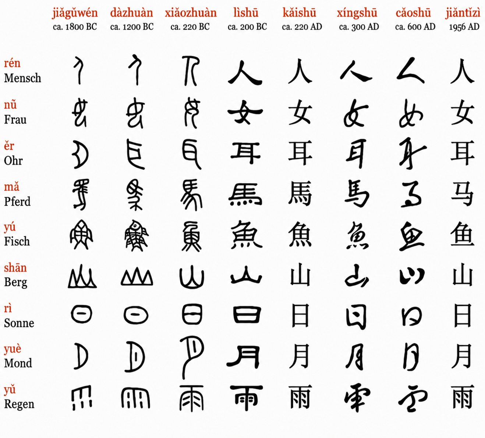
Der Entwicklungsstrang im Überblick
Die Grafik zeigt die Abfolge der Schriftstile: Orakelknochenschrift → Bronzeschrift → große und kleine Siegelschrift (Höhepunkt 221–206 v. Chr.) → Kanzleischrift (löst im 1. Jh. n. Chr. die Siegelschrift als Gebrauchsschrift ab) → Regelschrift (2.–4. Jh.) und Halbkursive (um das 4. Jh.). Wichtig ist: Die Stile lösen einander nicht ab, sie treten nebeneinander und übernehmen verschiedene Aufgaben.
Zwei Entwicklungslinien. Man unterscheidet die formelle Linie (Siegelschrift → Kanzleischrift → Regelschrift), getragen von Repräsentation und Amtsgebrauch, und die kursive Linie (frühe Grasschrift → Halbkursive), getragen von Tempo und Handschrift. Die Halbkursive entstand parallel zur Regelschrift, nicht aus ihr.
Materialgeschichte als Motor. Knochen und Messer → dünne, eckige Striche. Bronzeguss → runde, volle Formen. Bambusstreifen und Pinsel → schmale, hohe Zeichen und der Zwang zur Kolumne. Papier → freie Flächengestaltung und die Blüte der Kalligraphie.
Warum Vielfalt bleibt. Jeder Stil behält eine Funktion: Siegelschrift für Siegel und Titel, Kanzleischrift für feierliche Aufschriften, Regelschrift für Druck und Schule, Halbkursive für die Alltagshandschrift, Grasschrift für die Kunst. In diesem Nebeneinander gleicht die chinesische Schriftkultur der europäischen mit Fraktur, Antiqua, Kursive und Schreibschrift.
- formelle vs. kursive Linie – zwei parallele Entwicklungsstränge
- Duktus – äußere Gestaltung und Linienführung einer Schrift
Bronzeschrift 金文 Volle, runde Striche von ungleicher Breite, noch stark bildhaft — vom Guss geformt, nicht vom Griffel
Inhalt der Inschriften: Belehnungen, Feldzüge, Widmungen an die Ahnen.
„Meine Wagen sind kampfbereit, meine Pferde desgleichen. Des Fürsten Majestät zieht aus auf die Jagd mit erhobenem Banner, der Hirsche Spuren ist's, was er sucht. Meine wackeren Reiter, sie kommen alle."
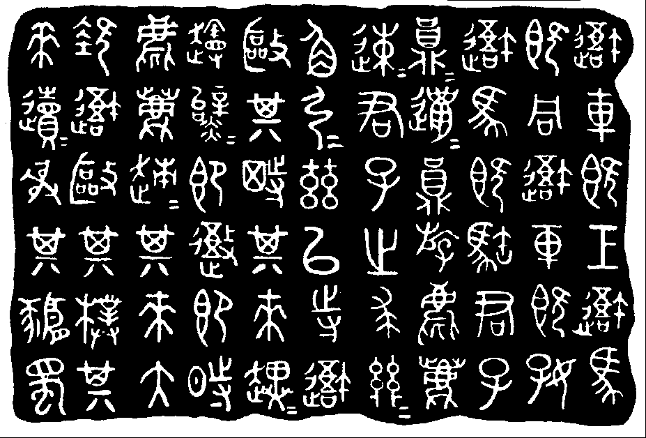
Siegelschrift Gleich starke Linien, streng, symmetrisch
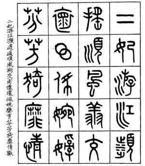
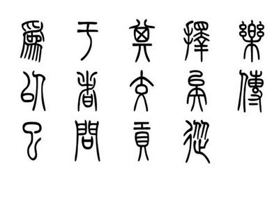
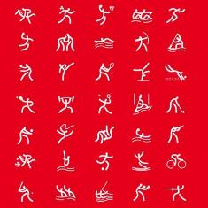
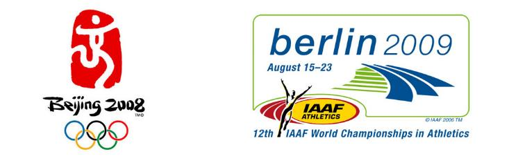
Kanzleischrift 隶书 Geschwungene Führung, verdickte Striche — der Umbruch 隶变
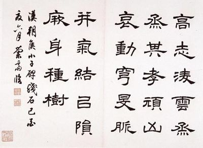
Halbkursivschrift 行书 Die Pinselstriche gehen ineinander über — Schrift des privaten Gebrauchs
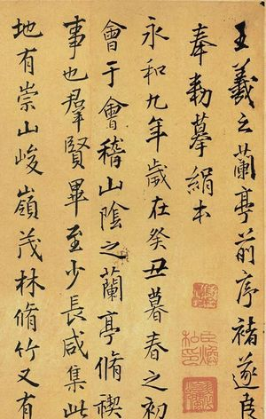
Regelschrift 楷书 Eckig, klar, am leichtesten lesbar — Grundform des Schriftunterrichts
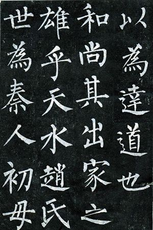
Grasschrift 草书 Ganze Komponenten werden zum Schnörkel — die höchste kalligraphische Kunstform
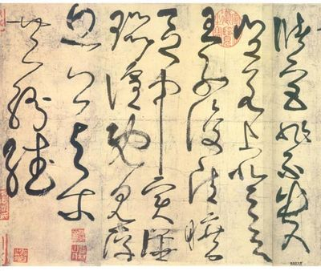
Jeder Stil behält eine Funktion
- 大篆 und 小篆 — Urkunden, Titel, Siegel
- 楷书 — Druck und Schule
- 行书 — die Alltagshandschrift
- 草书 — Kalligraphie und Kunst
Wie in Europa Fraktur, Antiqua, Kursive und Schreibschrift nebeneinander bestehen.
Die Schriftreform von 1956 Angenommen am 28. Januar 1956, veröffentlicht am 31. Januar
| Langzeichen | Kurzzeichen | Deutsch | Methode | |
|---|---|---|---|---|
| 馬 | 马 | mǎ | Pferd | Punkte zu Linien |
| 龍 | 龙 | lóng | Drache | Kursivform |
| 圖 | 图 | tú | Karte | Bestandteil ersetzt |
| 單 | 单 | dān | einzeln | Striche weggelassen |
| 認 | 认 | rèn | erkennen | einfacheres Phonetikum |
Bekanntgemacht am 31. Januar 1956 in der Tageszeitung
人民日报 .
Cursor auf den Ausschnitt — dann erscheint die Seite in voller Größe.
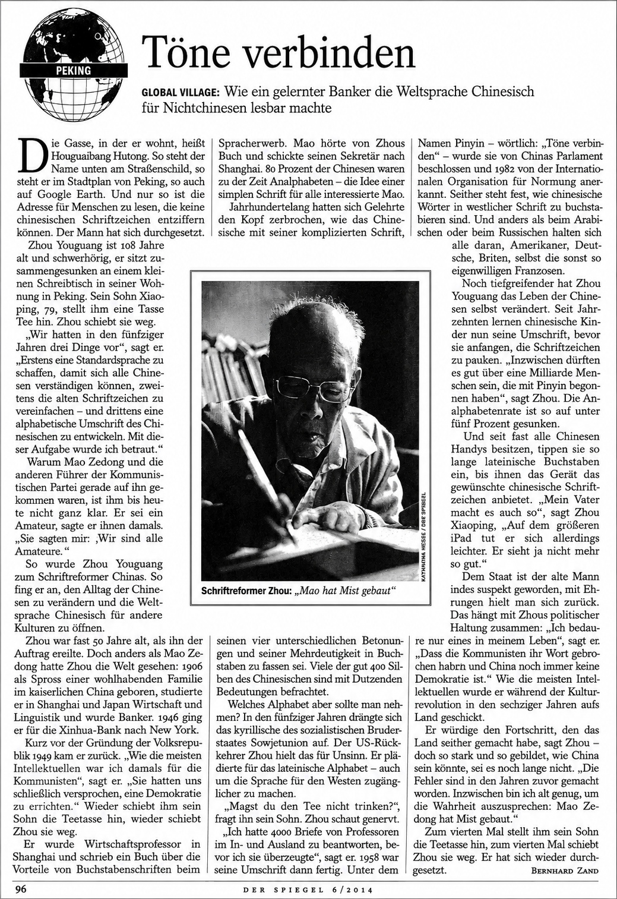
Die Schriftreform von 1956
Am 28. Januar 1956 nahm der Staatsrat das „Konzept zur Vereinfachung der chinesischen Schriftzeichen“ an; am 31. Januar veröffentlichte es die Tageszeitung 人民日报 . Die Reform griff auf eine große Zahl handschriftlicher Kurzformen zurück, die schon in der Zeit der Nord- und Süd-Dynastien und verbreitet in der Tang-Zeit verwendet wurden; über 50 Kurzzeichen stammen aus dem Taiping-Reich. Vorbereitet wurde sie durch Intellektuelle der Bewegung des Vierten Mai wie 钱玄同 .
Methoden der Vereinfachung. Verbindung von Punkten zu Linien (馬 → 马 Pferd); Weglassen von Strichen oder Bestandteilen (爲 bzw. 為 → 为 ); Zusammenfassung mehrerer Langzeichen zu einem Kurzzeichen (復 und 複 → 复); Ersetzen eines komplexen Lautteils durch ein einfacheres Phonetikum (認 → 认 ); Übernahme von Kursivformen; Teil-für-Ganzes (廣 → 广 ). Weitere Beispiele: 图 für 圖 Karte, 龙 für 龍 Drache, 单 für 單 einzeln.
Mehr als Strichreduktion. Die Schriftreformen betrafen auch die Festlegung einer Standardaussprache, einer Standardschriftart, des Bestands allgemein gebräuchlicher Zeichen sowie die Systematisierung der lexikographischen Anordnung. 2013 fasste die Norm 通用规范汉字表 den amtlichen Bestand auf 8.105 Zeichen zusammen.
Die gescheiterte zweite Runde. 1977 wurde eine weitere Vereinfachungsstufe veröffentlicht, die 二简字 . Sie stieß auf breite Ablehnung und wurde 1986 offiziell zurückgenommen – ein wichtiger Hinweis darauf, dass Schriftpolitik an Akzeptanzgrenzen stößt.
Der geteilte Schriftraum. In Taiwan, Hongkong und Macau blieb die Tradition der Langzeichen erhalten, weil die Reformen dort nicht durchgeführt wurden; verbreitet ist sie auch bei Überseechinesen. So blieb die symbolische Erkennbarkeit von Zeichen und Radikalen bewahrt. In handschriftlichen Texten sind dort allerdings zahlreiche Kurzschreibungen üblich, die den Kurzzeichen der Volksrepublik teilweise entsprechen. Singapur schloss sich in den 1970er Jahren den Reformen der Volksrepublik an und übernahm zugleich die horizontale Schreibrichtung.
Rückkehr der Langzeichen? Parallel zu den Kurzzeichen werden die Langzeichen bis heute teilweise verwendet und kehren mit den zunehmenden Lockerungen in den Alltag zurück – in Kalligraphie, Werbung, Firmennamen und Buchtiteln. Bei einer Konferenz am 30. und 31. Oktober 2007 in Peking beschlossen Gelehrte aus der Volksrepublik, Taiwan, Korea und Japan die Vereinheitlichung der Schreibung geläufiger Wörter auf überwiegend traditioneller Grundlage. Das bedeutet keine Abschaffung der Kurzzeichen, sondern die Duldung einer Koexistenz.
Für den Unterricht. Gelernt wird im Regelfall 简体字 (Kurzzeichen), da Standard in der Volksrepublik, in Singapur und in den meisten Lehrwerken. 繁体字 (Langzeichen) sind für Taiwan, Hongkong und für ältere Texte erforderlich – die Umstellung fällt Fortgeschrittenen erfahrungsgemäß leichter als der umgekehrte Weg.
- 简体字 – Kurzzeichen · 繁体字 – Langzeichen
- 二简字 – zweite Vereinfachungsrunde 1977, 1986 zurückgenommen
- 通用规范汉字表 (2013) – amtlicher Bestand von 8.105 Zeichen
Vom 古文 zur Bildschirmschrift — „Schrift des Altertums"
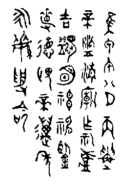
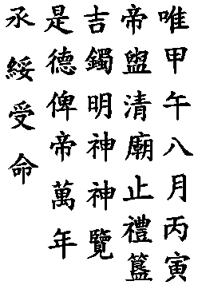
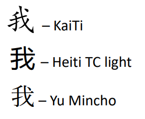
Die Schriften auf einer Zeitachse Klicke oder fahre über eine Marke — die Achse zeigt die Reihenfolge, nicht den Abstand
,
Jiǎhú-Zeichen — die älteste Schrift der Welt?
In in der Provinz fanden sich Schildkrötenpanzer mit eingeritzten Zeichen, rund 8600 Jahre alt. Einzelne gleichen späteren chinesischen Zeichen verblüffend.
Der Haken: Zwischen ihnen und der Orakelknochenschrift klafft eine Lücke von über 5000 Jahren. Ohne durchgehende Überlieferung bleiben sie Zeichen — eine Schrift sind sie damit noch nicht.
Südosteuropa
Vinča-Zeichen — Ornament oder Schrift?
Rund 700 verschiedene Symbole auf Tongefäßen im Donauraum. Sie wiederholen sich, aber sie reihen sich nicht: Es gibt keine erkennbaren Zeichenketten, keine Sätze.
Das Kriterium: Schrift bildet Sprache ab. Solange sich keine Sprache dahinter zeigt, sind es Symbole — kein Schriftsystem.
Mesopotamien
Keilschrift — Schrift aus der Buchhaltung
Die Sumerer schrieben mit einem angeschnittenen Schilfrohr in feuchten Ton. Der Griffel drückt keine Linie, sondern einen Keil — daher die eckige Form.
Am Anfang stehen keine Gedichte, sondern Listen: Getreide, Vieh, Abgaben. Aus der Verwaltung wächst die Schrift.
Ägypten
Hieroglyphen — „heilige eingemeißelte Zeichen“
Der griechische Name sagt, wofür sie gedacht waren: für Stein, für Tempel, für die Ewigkeit. Rund 700 Zeichen im klassischen Bestand.
Doppelte Natur: Ein Zeichen kann für ein Ding stehen oder für einen Laut — Bild und Laut im selben System.
Ägypten
Hieratisch — die Schreibschrift der Priester
Auf Papyrus mit der Binse geschrieben, laufen die Zeichen ineinander. Die Bildhaftigkeit verliert sich, die Geschwindigkeit gewinnt.
Dasselbe System, drei Register: Hieroglyphen für den Stein, Hieratisch für den Alltag der Verwaltung, später Demotisch für das Volk.
Ugarit, Syrien
Ugarit — das erste Alphabet
30 Zeichen, geschrieben in Keilschriftform. Das Entscheidende ist nicht die Form, sondern die feste Reihenfolge: Die Tontafel von Ugarit trägt die älteste bekannte Alphabetreihe.
Diese Reihenfolge lebt bis heute fort — über Phönizisch und Griechisch bis in unser A, B, C.
Shang-Dynastie
Orakelknochenschrift — der älteste gesicherte Beleg
Auf Rinderschulterblättern und Schildkrötenpanzern. Der Priester ritzte die Frage ein, erhitzte den Knochen und las die Antwort aus den Sprüngen.
Rund 4500 verschiedene Zeichen sind bekannt, etwa ein Drittel ist entziffert. Von hier führt eine ununterbrochene Linie bis zur heutigen Schrift.
Zhou-Dynastie
Bronzeschrift — Schrift für die Ewigkeit
In Ritualgefäße gegossen, nicht geritzt. Die Zeichen werden dadurch runder und voller: Der Guss verträgt keine dünnen Haarlinien.
Die Inschriften halten Belehnungen, Verträge und Siege fest — Schrift wird zum Rechtsdokument.
Levante
Phönizische Schrift — 22 Zeichen auf Reisen
Ein reines Konsonantenalphabet, knapp und schnell zu lernen. Die Phönizier waren Händler; ihre Schrift reiste mit den Waren durch das ganze Mittelmeer.
Kein Priesterwissen mehr: 22 Zeichen kann jeder Kaufmann lernen — Schrift verlässt den Tempel.
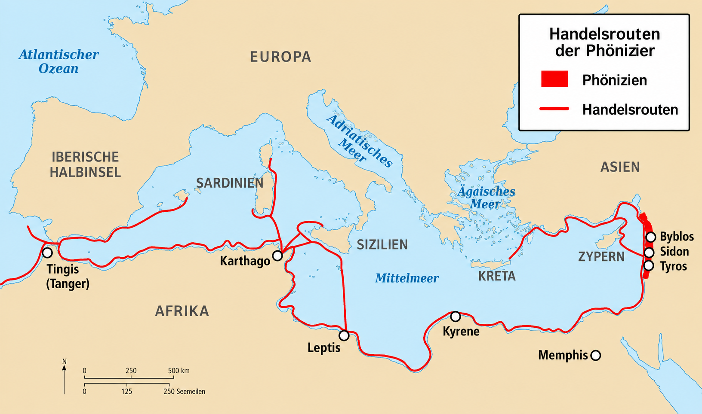
Griechenland
Griechisches Alphabet — die Vokale kommen dazu
Die Griechen übernahmen die phönizischen Zeichen und gaben den überzähligen Konsonantenzeichen einen neuen Dienst: Sie wurden zu Vokalen.
Damit ist das vollständige Alphabet da. Über die Etrusker gelangt es zu den Römern und von dort auf diese Folie.
Große Siegelschrift — viele Staaten, viele Formen
In der Zeit der Streitenden Reiche schreibt jeder Staat etwas anders. Dieselbe Sprache, aber abweichende Zeichenformen.
Das ist genau das Problem, das die Reichseinigung lösen muss — und der Grund für die erste Standardisierung.
Ägypten
Demotisch — die Schrift des Volkes
Noch flüchtiger als das Hieratische, für Verträge, Briefe und den Alltag. Vom Bild ist nichts mehr zu erkennen.
Auf dem Stein von Rosette steht derselbe Text dreimal: hieroglyphisch, demotisch und griechisch — der Schlüssel zur Entzifferung.
Qin-Dynastie
Kleine Siegelschrift — die erste Standardisierung
Nach der Reichseinigung lässt der erste Kaiser die Schrift vereinheitlichen: eine verbindliche Form für alle Zeichen im ganzen Reich.
Bis heute in Gebrauch: Namenssiegel werden nach wie vor in dieser Schrift geschnitten.
Han-Dynastie
Kanzleischrift — der Pinsel setzt sich durch
Die runden Bögen der Siegelschrift werden zu geraden Strichen mit betontem Ansatz und Auslauf. Schneller zu schreiben, leichter zu lesen.
Der entscheidende Bruch: Ab hier ist die Schrift für uns ohne Weiteres lesbar — die moderne Zeichenform ist im Kern da.
Grasschrift — die schnellste Hand
Striche werden zusammengezogen, ganze Zeichenteile zu einer Bewegung verkürzt. Ein Zeichen entsteht oft in einem einzigen Zug.
Nicht für jeden lesbar: Die Grasschrift ist Kunstform und persönliche Notiz zugleich, keine Gebrauchsschrift.
Halbkursivschrift — der Alltag der Handschrift
Zwischen Regel- und Grasschrift: Die Striche fließen ineinander, das Zeichen bleibt aber erkennbar.
Das ist die Schrift, die Menschen wirklich schreiben — dann, wenn niemand zusieht.
Regelschrift — die Schrift, die man lernt
Jeder Strich steht für sich, jeder hat seinen Platz und seine Reihenfolge. Das ist die Form, die in Lehrbüchern, Wörterbüchern und auf dieser Folie steht.
Die Stile lösen einander nicht ab. Sie treten hinzu und behalten jeweils ihre Aufgabe.
Volksrepublik China
Kurzzeichen — die Schriftreform
Die Strichzahl häufiger Zeichen wird verringert, um das Lesen- und Schreibenlernen zu erleichtern. 馬 wird zu 马.
Nicht überall: Taiwan, Hongkong und Macau schreiben weiterhin die Langzeichen 繁体字 .
Bildschirmschrift — 3500 Jahre ohne Bruch
Eingegeben wird über Pinyin, angezeigt wird ein Zeichen, dessen Bauplan aus der Orakelknochenschrift stammt. Kein anderes Schriftsystem der Welt hat eine so lange ununterbrochene Linie.
Zum Lesen einer Zeitung genügen rund 3000 Zeichen; ein großes Wörterbuch verzeichnet über 50 000.
Das Material formt die Schrift Pinsel 毛笔 · Papier 纸
- Der Pinsel erlaubt Druckmodulation — dünn und dick im selben Strich.
- Erst dadurch werden Kalligraphie und die charakteristischen Strichenden möglich.
- hat das Papierverfahren um 105 n. Chr. standardisiert, nicht erfunden.
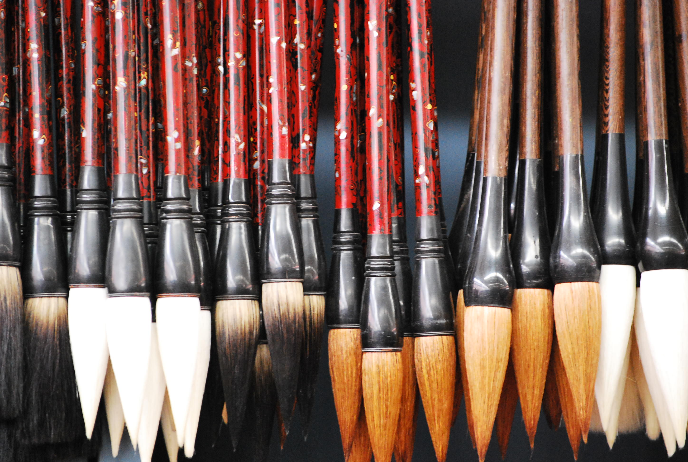
Pinsel und Papier – wie das Material die Schrift formt
Von der Beschaffenheit der Schreibstoffe hängt in hohem Maße der Duktus einer Schrift ab – ihre äußere Gestaltung und Linienführung. Vor der Erfindung von Schreibpinsel und Papier sahen chinesische Schriftzeichen deshalb deutlich anders aus als danach. Der älteste bekannte Duktus findet sich auf Bronzegeräten des 2. Jahrtausends v. Chr. und auf den in gefundenen, meist mit Orakelsprüchen beschrifteten Tierknochen. Diese noch bildhafte Schriftform nennen die Chinesen 古文 – „Schrift des Altertums“.
Der Pinsel 毛笔 . Die Erfindung wird traditionell dem General 蒙恬 (um 210 v. Chr.) zugeschrieben. Archäologisch sind Pinsel jedoch bereits in Chu-Gräbern des 5.–3. Jahrhunderts v. Chr. nachgewiesen; hat den Pinsel allenfalls verbessert. Der Pinsel erlaubt Druckmodulation – dünn und dick im selben Strich. Erst dadurch werden Kalligraphie und die charakteristischen Strichenden möglich.
Das Papier 纸 . Die Erfindung wird 蔡伦 zugeschrieben, obwohl es Funde aus China gibt, die auf etwa 200 v. Chr. datiert werden. war um 105 n. Chr. – dem Belegdatum der ersten Erwähnung des Verfahrens – Beamter der Behörde für die Fertigung von Instrumenten und Waffen am Kaiserhof und beschrieb erstmals das heute bekannte Herstellungsverfahren. Zutreffender ist daher: Er hat das Verfahren standardisiert und verbreitet, nicht erfunden.
Das Verfahren. Zu seiner Zeit gab es einen papierartigen Beschreibstoff aus Seidenabfällen. Die frühen Papiermacher mischten vor allem Hanf, alte Lumpen und Fischnetze und ergänzten sie mit Baumrinde oder dem Bast des Maulbeerbaums. Die eigentliche Erfindung lag in der Zubereitung: Die gesäuberten Fasern wurden zerstampft, gekocht und gewässert; anschließend schöpfte man einzelne Lagen mit einem Sieb ab, trocknete, presste und glättete sie. Beim Schöpfen entstand eine „Schönseite“ oberhalb des Siebes und eine „Siebseite“ am Sieb. Der Faserbrei lagerte sich als Vlies ab und bildete ein relativ homogenes Blatt.
Die vier Schätze des Studierzimmers 文房四宝 : Pinsel 笔 , Tusche 墨 , Papier 纸 und Reibstein 砚 . Sie bilden bis heute die Grundausstattung der Kalligraphie.
Weltwirkung. Nach der Schlacht am Talas 751 gelangte die Papierherstellung nach Samarkand, von dort in die arabische Welt und im 12. Jahrhundert nach Europa (, um 1150). Ohne diese Übertragung wäre Gutenbergs Druck mit beweglichen Lettern wirkungslos geblieben.
- Duktus – äußere Gestaltung, Linienführung einer Schrift
- 古文 – „Schrift des Altertums“
- 文房四宝 – die vier Schätze des Studierzimmers
Vom Bast zum Blatt Hanf, alte Lumpen, Fischnetze, Baumrinde und der Bast des Maulbeerbaums
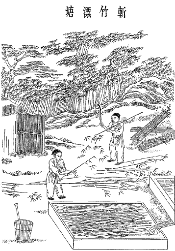
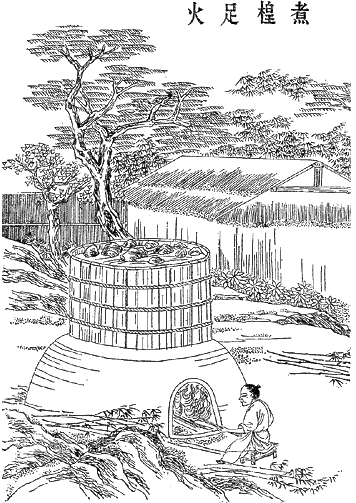
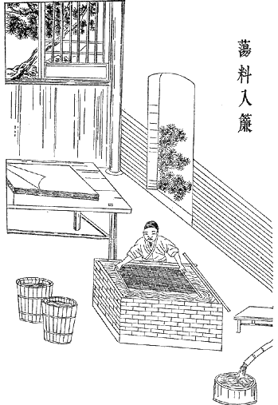
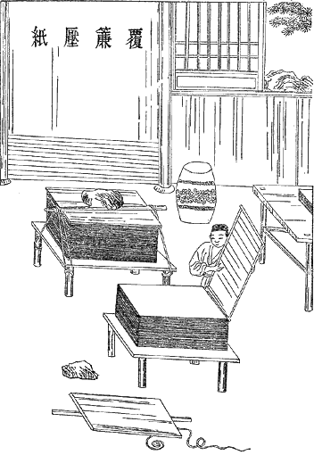
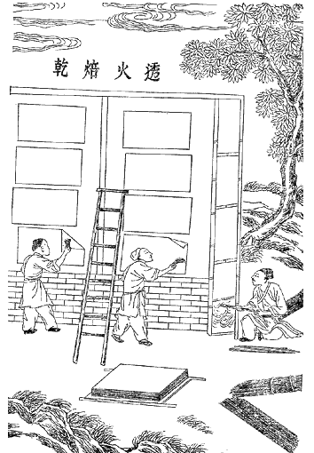
Die vier Schätze des Studierzimmers 文房四宝
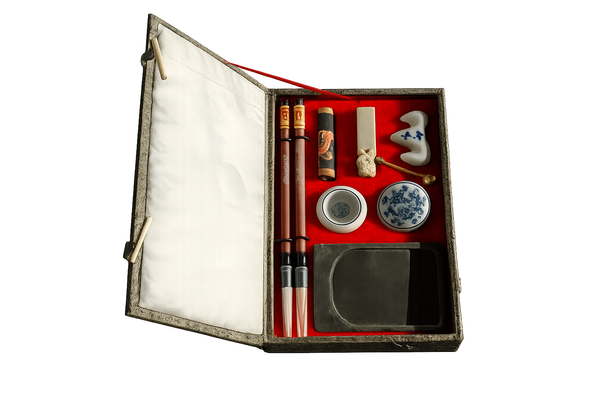
- 笔 — der Pinsel
- 墨 — die Tusche
- 纸 — das Papier
- 砚 — der Reibstein
Bis heute die Grundausstattung der Kalligraphie. Wie man sie vorbereitet, steht im Lesekasten.
Bevor der erste Strich fällt — die Vorbereitung
Die Tusche kommt nicht aus der Flasche, sondern aus dem Stein. Der feste Tuscheriegel 墨 wird mit wenig Wasser auf dem Reibstein 砚 angerieben, bis eine tiefschwarze, leicht zähflüssige Tusche entsteht. Das dauert einige Minuten — und diese Minuten gehören zur Sache: Sie sind die Zeit, in der sich der Schreibende sammelt. Erst danach wird der Pinsel gewässert, ausgestrichen und angesetzt.
1 · Der Reibstein 砚 . Er hat eine flache Reibfläche und am tieferen Ende eine Mulde, in der sich die fertige Tusche sammelt. Der Stein muss trocken und sauber sein; Reste vom Vortag verklumpen und ziehen Fasern in den Pinsel.
2 · Wasser zugeben. Nur ein Löffelchen kaltes, klares Wasser in die Mulde — lieber mehrmals nachgießen als zu Beginn zu viel. Zu viel Wasser ergibt eine graue, laufende Tusche, die auf dem saugenden Papier ausblüht.
3 · Anreiben. Den Tuscheriegel senkrecht halten und in ruhigen, gleichmäßigen Kreisen reiben, ohne zu drücken. Nach zwei bis fünf Minuten ist die Tusche so weit: Sie glänzt, zieht am Stein leicht Fäden und hinterlässt auf dem Fingernagel einen deckenden Strich. Anschließend den Riegel abtupfen und hochkant trocknen lassen, sonst bekommt er Risse.
4 · Den Pinsel 笔 vorbereiten. Ein neuer Pinsel ist mit Leim versteift; er wird in lauwarmem Wasser vorsichtig ausgedrückt, bis sich die Haare vollständig lösen. Vor jedem Schreiben wird der Pinsel gewässert, am Rand des Steins ausgestrichen und in eine feine Spitze gedreht. Er nimmt die Tusche nur bis etwa zur Hälfte der Haarlänge auf — ein bis an den Schaft getränkter Pinsel verliert die Spitze.
5 · Papier und Haltung. Das Papier liegt auf einer Filzunterlage, die die durchschlagende Tusche aufnimmt, und wird oben mit einem Beschwerer gehalten. Der Pinsel steht senkrecht; geführt wird aus Handgelenk und Arm, nicht aus den Fingern. Der Unterarm liegt bei kleinen Zeichen auf, bei großen schwebt er frei.
6 · Nach dem Schreiben. Den Pinsel gründlich in klarem Wasser auswaschen, bis kein Schwarz mehr abgeht, die Spitze ausdrehen und den Pinsel hängend trocknen. Nie mit der Spitze nach oben in ein Gefäß stellen: Das Wasser läuft in den Schaft und löst die Bindung. Den Reibstein auswaschen und trocken wischen.
- 墨 – Tusche, als fester Riegel
- 砚 – Reibstein mit Reibfläche und Mulde
- 笔 – Pinsel; wird gewässert und ausgestrichen
- 纸 – saugendes Papier auf Filzunterlage
- Senkrechte Pinselhaltung – geführt aus Handgelenk und Arm
- Hängend trocknen – nie mit der Spitze nach oben abstellen
Kreation und Transformation
der chinesischen Schriftzeichen
Kategorie 1 · Piktogramme 象形 — „die Form abbilden" · ca. 2–4 %
- Zeichnerische Nachahmung beobachteter Dinge, entstanden durch das Nachzeichnen des Umrisses.
- 人 Mensch · 雨 Regen · 刀 Messer · 木 Holz
- Wenige Zeichen — aber die produktivsten Bausteine des ganzen Systems.
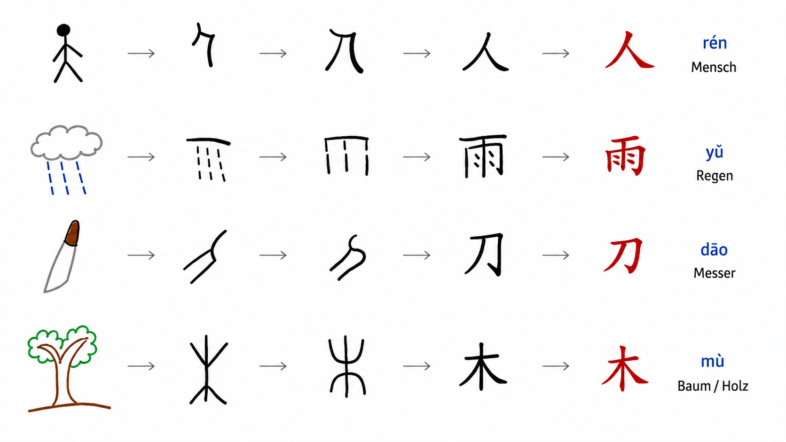
Piktogramme sind bis heute in Gebrauch.
Piktogramme 象形 – das Abbild als Ausgangspunkt
Die ersten Schriftzeichen sind zeichnerische Nachahmungen beobachteter Dinge. 象形 „die Form abbilden“ bezeichnet Piktogramme, die das Bezeichnete nach seiner Erscheinungsform wiedergeben: 人 Mensch, 雨 Regen, 刀 Messer, 木 Holz. Bei den chinesischen Zeichen entstanden sie hauptsächlich durch das Nachzeichnen des Umrisses. Sie machen nur rund 2–4 % aller Zeichen aus – sind aber die wichtigsten.
Wenige, aber tragend. Der geringe Anteil täuscht. Piktogramme sind zugleich die häufigsten Zeichen im Text und die produktivsten Bausteine: Als Radikale und Komponenten stecken sie in nahezu allen zusammengesetzten Zeichen. Wer 200 Piktogramme kennt, hat den Schlüssel zu tausenden abgeleiteten Zeichen.
Vom Bild zur Konvention. Die Bildhaftigkeit ist heute meist nur noch in der Orakelknochen- oder Siegelschriftform erkennbar. 木 zeigte einst deutlich Stamm, Äste und Wurzeln; 人 eine Person im Profil; 雨 Tropfen unter einer Wolke. Der Übergang zur Kanzleischrift (隶变 , vgl. Folie „Kanzleischrift“) hat diese Bilder in gerade Striche überführt.
Grenze des Verfahrens. Ein Bild kann Konkretes zeigen, aber nicht „oben“, „nicht“, „drei“ oder „warum“ darstellen. Genau hier setzen die weiteren Verfahren an: Indikatoren (指事 ), Bedeutungszusammensetzungen (会意 ) und Phonogramme (形声 ).
Piktogramme heute. Im Zeitalter von Globalisierung und Internationalisierung werden Piktogramme in standardisierter Form verwendet, um Informationen sprachunabhängig oder möglichst schnell zu vermitteln – als Verkehrszeichen, Wegeleitsysteme (ISO 7001) oder Gefahrensymbole. Auch hier zeigt sich dieselbe Grenze: Piktogramme funktionieren für Konkretes und Konventionalisiertes, nicht für komplexe Aussagen.
- 象形 – Bildzeichen, Piktogramm
- Piktogramm – von lat. pictum „gemalt“ und griech. „schreiben“
- 隶变 – Verlust der Bildhaftigkeit beim Übergang zur Kanzleischrift
Kategorie 2 · Ideogramme 指事 — „auf Tatbestände deuten" · unter 1 %
Ein Strich verschiebt die Bedeutung Neue Zeichen durch Hinzufügen von Strichen zu bestehenden
- 木 Baum wird zu 本 Wurzel — die Markierung sitzt unten.
- 木 wird zu 未 Wipfel — die Markierung sitzt oben.
- 刀 Messer wird zu 刃 Klinge — die Markierung zeigt auf die Schneide.
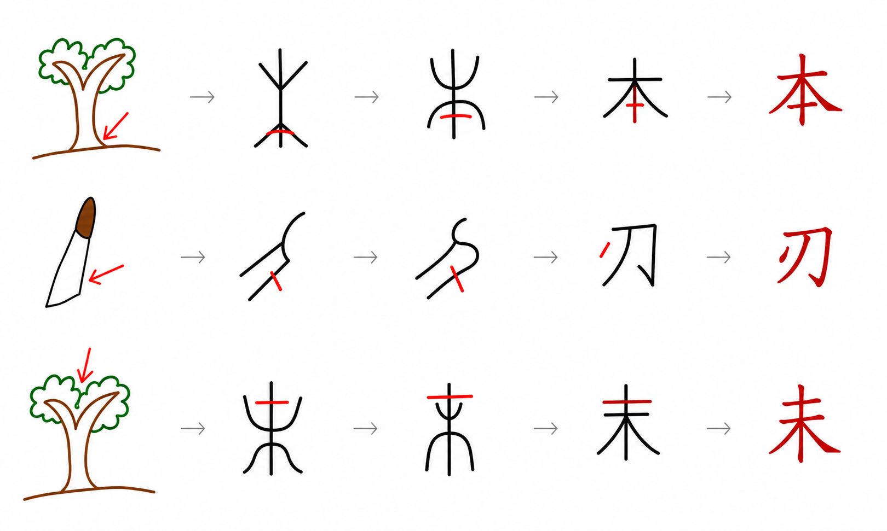
Zeichen verknüpfen
Eine weitere Methode: bestehende Zeichen verbinden.
Das neue Zeichen trägt die Bedeutung der Einzelzeichen in sich — kein Laut ist im Spiel.
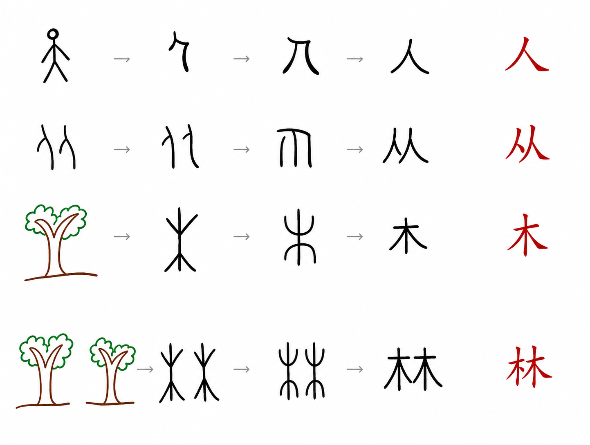
Kategorie 3 · Vereinigte Bedeutungen 会意 · ca. 2,8 % — Karte anklicken
Zusammengesetzte Ideogramme 会意
Zusammengesetzte Ideogramme (會意 / 会意 „vereinigte Bedeutungen“) bestehen aus zwei oder mehr Zeichen, von denen jedes zur Bedeutung beiträgt. 休 „ausruhen“ verbindet den Menschen 亻 (Radikal 9) mit dem Baum 木 (Radikal 75): ein Mensch, der sich an einen Baum lehnt. 名 „Name“ besteht aus Mondsichel bzw. Abend 夕 (Radikal 36) und Mund 口 (Radikal 30) – um sich im Dunkeln erkennen zu geben, ruft man seinen Namen. Ihr Anteil beträgt rund 2,8 %.
Weitere klassische Beispiele. 好 „gut“ aus Frau 女 und Kind 子; 秋 „Herbst“ aus Getreide 禾 und Feuer 火; 焚 „verbrennen“ aus Wald 林 über Feuer 火; 明 „hell“ aus Sonne 日 und Mond 月; 从 „folgen“ aus zwei Menschen hintereinander; 众 „Menge“ aus drei Menschen; 森 „dichter Wald“ aus drei Bäumen.
Eine methodische Warnung. Solche Deutungen sind einprägsam, aber nicht immer wissenschaftlich haltbar. Viele populäre Erklärungen sind nachträgliche Volksetymologien. Bei 好 etwa ist umstritten, ob die ursprüngliche Bedeutung „schön (von einer Frau)“, „lieben“ oder „gebären“ war. Belastbar wird eine Deutung erst durch den Vergleich mit der Orakelknochen- und Siegelschriftform. Im Unterricht sind Merkgeschichten trotzdem wertvoll – sie sollten aber als Merkhilfe und nicht als Etymologie ausgewiesen werden.
Zahlen mit Vorsicht. Die Angabe „2,8 %“ stammt aus einer Auszählung des modernen Zeichenbestands. Im 说文解字 (100 n. Chr.) machen die -Zeichen mit 1.167 von 9.353 dagegen rund 12,5 % aus. Der Anteil sinkt, weil im Lauf der Zeit fast nur noch Phonogramme neu gebildet wurden.
Mischtypen. Häufig ist der Fall 会意兼形声 : Eine Komponente trägt zugleich Bedeutung und Laut. Die sechs Kategorien sind Ordnungsraster, keine trennscharfen Schubladen.
- 会意 – zusammengesetztes Ideogramm
- Volksetymologie – nachträgliche, sachlich unzutreffende Deutung
- 说文解字 – erstes systematisches Zeichenlexikon, 100 n. Chr.
Neue Wörter ohne neue Zeichen 字 ist das Zeichen — 词 ist das Wort
- Für jedes Konzept ein neues Zeichen zu erfinden wäre möglich — aber nicht sinnvoll.
- Stattdessen werden bestehende Zeichen kombiniert.
- Wer 电, 话, 脑 kennt, erschließt 电话 und 电脑 fast von selbst.
Neue Wörter ohne neue Zeichen
Theoretisch ließe sich für jedes neue Objekt und jedes neue Konzept ein neues Zeichen schaffen. Sinnvoll ist das nicht – es entstünden zu viele Zeichen. Das Chinesische hat einen anderen Weg gefunden, den Wortschatz zu erweitern: Zwei oder mehr bestehende Zeichen, die charakteristische Merkmale des neuen Begriffs verkörpern, werden zu einem neuen Wort kombiniert. Der Zeichenvorrat bleibt stabil, der Wortschatz wächst unbegrenzt.
Zeichen ≠ Wort. Diese Unterscheidung ist zentral: 字 ist das Schriftzeichen, 词 das Wort. Ein Wort kann aus einem, zwei oder mehr Zeichen bestehen. Im Altchinesischen dominierten einsilbige Wörter; heute sind über 70 % des Wortschatzes zweisilbig.
Warum die Verzweisilbigung? Durch Lautwandel gingen im Lauf der Jahrhunderte Endkonsonanten verloren; die Zahl unterscheidbarer Silben sank stark. Es entstanden massenhaft Homophone. Die Zusammensetzung zweier Zeichen schafft die verlorene Eindeutigkeit zurück.
Wortbildungstypen (mit Beispielen). Determinativ: 火车 „Feuer-Wagen“ = Zug, 电脑 „Elektro-Gehirn“ = Computer, 电力机车 = Elektrolokomotive. Koordination: 朋友 Freund, 学习 lernen. Verb + Objekt: 吃饭 essen. Resultativ: 说明 erklären. Affigierung: 桌子 Tisch, 现代化 Modernisierung. Abkürzung: 北大 = 北京大学 Peking-Universität.
Lehnwörter. Auch Fremdes wird meist mit vorhandenen Zeichen bewältigt: rein lautlich 咖啡 Kaffee, 沙发 Sofa; rein bedeutungsübersetzend 电脑 , 飞机 Flugzeug; gemischt 啤酒 Bier (Laut „“ + Sinnzeichen „Alkohol“).
Didaktische Folgerung. Für Lernende ist das eine gute Nachricht: Der Lernaufwand steigt nicht linear mit dem Wortschatz. Wer 电, 话, 脑, 视 kennt, erschließt 电话, 电脑, 电视 fast von selbst.
- 字 Zeichen – 词 Wort
- Determinativkompositum – Bestimmungswort + Grundwort
- Homophonie – Gleichklang verschiedener Morpheme
Kategorie 4 · Das Konstruktionsprinzip Zeichen C = Signifikum B + Phonetikum A
女 + 马 = 妈
- 女 Frau — das Signifikum, es gibt das Bedeutungsfeld.
- 马 Pferd — das Phonetikum, es gibt nur den Klang.
- Das Pferd hat mit der Mutter nichts zu tun.
Das Konstruktionsprinzip des Phonogramms
Mit der wachsenden Komplexität der Gesellschaft stieg der Bedarf an Zeichen. Die piktographische Zeichenbildung reichte nicht mehr aus – zu viele Objekte und abstrakte Konzepte ließen sich nicht abbilden. Daher entstand ein neues Verfahren: Man nimmt ein bereits existierendes Zeichen, das auf die Aussprache des neuen Zeichens hinweist (Phonetikum), kombiniert es mit einem weiteren Zeichen, das das Bedeutungsfeld angibt (Signifikum), und legt die Bedeutung des neuen Zeichens fest.
Das Grundmuster. Zeichen C = Signifikum B + Phonetikum A. Beispiel: 妈 „Mutter“ = 女 „Frau“ (Bedeutungsfeld) + 马 „Pferd“ (nur Lautgeber). Das Pferd hat mit der Mutter nichts zu tun – es liefert ausschließlich den Klang.
Vorteile. Das Verfahren ist beliebig produktiv: Für jedes neue Wort lässt sich ein Zeichen bauen. Und es ist lernökonomisch, weil sich die Aussprache eines unbekannten Zeichens oft erschließen lässt.
Nachteile. Viele Zeichen teilen dieselbe Aussprache; das Chinesische hat nur rund 400 Silben ohne und etwa 1.300 mit Tonunterscheidung – für zehntausende Zeichen. Zudem hat sich die Aussprache seit der Zeichenbildung verändert, sodass das Phonetikum heute oft nur noch ungefähr passt.
Wichtige Präzisierung zur Tonentstehung. Die Töne sind nicht entstanden, um Homophone auseinanderzuhalten. Sie sind das Ergebnis der sogenannten Tonogenese: Beim Verlust von Endkonsonanten hinterließen diese eine charakteristische Tonhöhenbewegung – ein früherer Kehlkopfverschluss wurde zum steigend-fallenden dritten Ton, ein früheres -s zum fallenden vierten Ton. Der Ton ist also die Spur eines verschwundenen Lauts, keine bewusste Erfindung.
Historische Einordnung. Bereits in der Orakelknochenschrift sind Phonogramme belegt. Das Verfahren ist damit nicht die letzte Stufe einer Entwicklung, sondern von Anfang an vorhanden – es wurde nur im Lauf der Zeit zum dominierenden Bildungsmuster.
- Phonetikum (Lautträger) – gibt die Aussprache an
- Signifikum (Sinnträger, meist das Radikal) – gibt das Bedeutungsfeld an
- Tonogenese – Entstehung von Tönen aus verlorenen Endkonsonanten
Ein Radikal, zwei Laute Wasser trifft auf 木 und 林
- 沐 baden — Wasser gibt den Sinn, 木 den Laut.
- 淋 begießen — dasselbe Wasser, aber 林 gibt den Laut.
- Gleiches Bedeutungsfeld — der Lautgeber entscheidet.
Phonogramme in der Anwendung
Die Sinn- und Lautkombinationen der Phonogramme bestehen aus dem Radikal als semantischer Komponente (Sinnträger, Signifikum) und einer phonetischen Komponente (Lautträger, Phonetikum). Weil das Chinesische verhältnismäßig wenige Silben besitzt, klingen viele Wörter gleich. Daraus entstand die Idee, neue Zeichen zu schaffen, bei denen ein Teil den Laut und der andere die Bedeutung angibt.
Eine Lautreihe. Das Phonetikum 青 erzeugt eine ganze Familie: 清 „klar“ (mit Wasser), 情 „Gefühl“ (mit Herz), 请 „bitten“ (mit Sprache), 晴 „heiter“ (mit Sonne), 睛 „Augapfel“ (mit Auge). Wer die Reihe kennt, liest fünf Zeichen statt eines.
Eine Radikalreihe. Umgekehrt gruppiert 马 als Phonetikum: 妈 Mutter, 吗 ma Fragepartikel, 骂 schimpfen, 码 Nummer.
Position der Komponenten. Das Signifikum kann links stehen (江, 说), rechts (放), oben (花, 室), unten (想, 盆) oder außen (园, 病). Die häufigste Anordnung ist links Sinn – rechts Laut; verlässlich ist sie aber nicht.
Wie zuverlässig ist das Phonetikum? Untersuchungen des modernen Zeichenbestands zeigen: Nur etwa ein Viertel bis ein Drittel der Phonogramme gibt Silbe und Ton korrekt wieder; lässt man den Ton außer Acht, steigt die Trefferquote auf rund zwei Drittel. Beispiel für Abweichung: 每 liefert 海 , 梅 und 敏 .
Regel für Lernende. Das Phonetikum ist ein Hinweis, keine Garantie – aber ein Hinweis, der das Raten von Zufall in gebildetes Vermuten verwandelt. Ebenso gilt: Das Signifikum grenzt ein Bedeutungsfeld ein, es liefert keine Definition.
- 形声 – „Form und Laut“, Phonogramm
- Lautreihe – Gruppe von Zeichen mit gleichem Phonetikum
- Bedeutungsfeld – semantischer Bereich, den das Radikal absteckt
Die größte Kategorie 形声 — „Form und Laut"
rund 90 %
Neun von zehn Zeichen enthalten eine Lautkomponente. Wer dieses Bauprinzip versteht, versteht das System.
Phonogramme 形声 – die größte Kategorie
Die Phonogramme (形聲 / 形声 „Form und Laut“) bilden mit rund 90 % die mit Abstand größte Kategorie aller chinesischen Schriftzeichen. Sie verbinden ein Radikal als Sinnträger mit einer phonetischen Komponente. Beispiele: 氵 Wasser (Radikal 85) + 木 → 沐 „sich die Haare waschen“; 氵 + 林 → 淋 „begießen, duschen“; 艹 Gras (Radikal 140) + 采 → 菜 „Gemüse“.
Woher die Prozentzahlen? Die Angaben schwanken, weil unterschiedliche Zeichenbestände ausgezählt werden. Im 说文解字 (100 n. Chr.) sind es 7.697 von 9.353 Zeichen, also rund 82 %. In Auszählungen auf Grundlage des 康熙字典 liegt der Anteil bei etwa 90 %. Für den Unterricht genügt: Neun von zehn Zeichen enthalten eine Lautkomponente.
Die sechs Kategorien 六书 im Überblick: 象形 Piktogramm, 指事 Indikator, 会意 Bedeutungszusammensetzung, 形声 Phonogramm, 假借 Entlehnung, 转注 Synonymbildung.
Eine wichtige Unterscheidung. Seit dem Qing-Gelehrten gilt die Lehre der 四体二用 : Nur die ersten vier Kategorien sind Verfahren der Zeichenbildung (造字法); 假借 und 转注 beschreiben dagegen die Verwendung vorhandener Zeichen (用字法). Prozentangaben für diese beiden Kategorien sind deshalb mit Vorsicht zu lesen.
Signifikum ist nicht gleich Wörterbuchradikal. Bei den meisten Phonogrammen fallen beide zusammen, aber nicht immer: Bei 闻 „hören“ ist 耳 „Ohr“ der Sinnträger, das Wörterbuchradikal jedoch 门 – das zugleich das Phonetikum ist.
Analyseübung. Ein produktiver Zugang für Lernende: unbekanntes Zeichen zerlegen → Radikal bestimmen → Bedeutungsfeld schätzen → Phonetikum suchen → Aussprache vermuten → im Wörterbuch prüfen.
- 六书 – die sechs Kategorien der Zeichenanalyse
- 四体二用 – vier Bildungs-, zwei Verwendungsverfahren
- 部首 – Radikal, „Abteilungskopf“
Bedeutungstragende Bestandteile Das Radikal grenzt ein Bedeutungsfeld ein — es definiert nicht
| Bestandteil | Bedeutung | Beispiele |
|---|---|---|
| 刂, 刀 | schneiden, trennen | 切 分 别 |
| 亻, 人 | Mensch | 你 他 住 |
| 冫 | kalt, Eis | 冷 冰 冬 |
| 口 | Mund, Öffnung | 吃 叫 喝 |
| 土 | Land, Boden | 地 城 坐 |
| 女 | Frau, weiblich | 妈 姐 她 |
| 宀 | Dach | 家 安 客 |
| 山 | Berg, Gebirge | 岛 峰 岭 |
| 目 | Auge | 看 眼 睡 |
| 纟, 糸 | Seide, Faden | 红 纸 给 |
| 艹 | Gras, Pflanze | 花 菜 茶 |
| 讠, 言 | Sprache, Sprechen | 说 话 谢 |
Bedeutungstragende Zeichenbestandteile (I)
Viele Zeichen haben im Lauf der Schriftevolution ihr Erscheinungsbild und ihre Aussprache verändert. In zahlreichen Zeichen finden sich aber bis heute Bestandteile, die auf die Bedeutung hinweisen und von denen ausgehend neue Zeichen gebildet wurden. Diese Bestandteile sind eine wirksame Hilfe beim Erschließen der Bedeutung und beim Lernen unbekannter Zeichen. Die Tabelle zeigt die erste Gruppe mit Beispielen.
Varianten beachten. Viele Radikale nehmen in der Kombination eine verkürzte Form an, damit sie in das quadratische Zeichenfeld passen: 人 → 亻, 刀 → 刂, 言 → 讠, 糸 → 纟. Diese Formen zu erkennen ist der eigentliche Lernschritt.
Bedeutungsfeld, nicht Bedeutung. 氵 verweist auf „Wasser, Flüssigkeit, Fließen“ – ob daraus 河 Fluss, 汤 Suppe oder 洗 waschen wird, sagt das Radikal nicht. Es grenzt ein, es definiert nicht.
Grenzen. Nicht jedes Zeichen ist transparent: Bei 的 oder 了 hilft die Analyse nicht weiter. Und manche Zuordnungen sind rein traditionell und nur historisch erklärbar.
Arbeitsauftrag für den Unterricht. Die Lernenden ergänzen die Beispielspalte selbst und begründen jeweils, warum das Radikal zur Bedeutung passt – oder warum eben nicht.
- 部首 – Radikal
- Variantenform – verkürzte Radikalform in der Zusammensetzung
Bedeutungstragende Bestandteile Von den 214 klassischen Radikalen sind nur etwa 50 wirklich produktiv
| Bestandteil | Bedeutung | Beispiele |
|---|---|---|
| 彳 | Schritt, Gehen | 很 往 律 |
| 忄, 心 | Herz, Gefühl | 忙 快 想 |
| 扌, 手 | Hand | 打 找 推 |
| 日 | Sonne, Tag | 时 明 晚 |
| 木 | Baum, Holz | 树 桌 椅 |
| 氵, 水 | Wasser | 河 海 洗 |
| 火 / 灬 | Feuer, auch unten | 烧 灯 热 |
| 犭, 犬 | Hund, Tier | 狗 猫 猪 |
| 辶 | gehen, sich bewegen | 这 进 远 |
| 贝 | Muschel — Geld, Handel | 财 买 贵 |
| 酉 | Weinkrug, Alkohol | 酒 醉 醋 |
| 钅, 金 | Metall, Gold | 钱 银 铁 |
Bedeutungstragende Zeichenbestandteile (II)
Fortsetzung der Übersicht: Auch diese Bestandteile weisen auf das Bedeutungsfeld eines Zeichens hin und lassen sich als Lernhilfe nutzen. Wer die rund 50 häufigsten Radikale sicher beherrscht, kann bei einem Großteil unbekannter Zeichen zumindest das Sachgebiet bestimmen – und damit im Wörterbuch gezielt suchen.
Die Position ist bedeutsam. Dasselbe Grundzeichen kann als Radikal an verschiedenen Stellen stehen: 火 steht links in 烧, unten als 灬 in 热. Solche Stellungsvarianten muss man als Paar lernen.
Häufigkeit. Von den 214 klassischen Radikalen sind nur etwa 50 wirklich produktiv. Es lohnt sich, diese systematisch zu lernen, statt die Liste vollständig durchzuarbeiten.
Semantische Zeitkapseln. Manche Radikale erzählen Kulturgeschichte: 贝 „Muschel“ steckt in fast allen Zeichen rund um Geld und Handel (财 Vermögen, 买 kaufen) – ein Nachhall der Zeit, als Kaurimuscheln Zahlungsmittel waren. 酉 zeigt einen Weinkrug und markiert alles Gegorene.
Zur Aussprache. In der Vorlage ist das Radikal 女 mit angegeben; korrekt ist . Ebenso 雨 , nicht .
- 贝 – Muschel; Radikal für Geld und Handel
- Stellungsvariante – dasselbe Radikal in anderer Position und Form
Die Grundstriche Alles, was in einem Zug gezeichnet wird, ist ein Strich
- 点 — der Punkt, kurz nach rechts unten: 你 字 学
- 横 — waagerecht von links nach rechts: 大 三 司
- 竖 — senkrecht von oben nach unten: 中 上 作
- 撇 — geschwungen nach links unten, auslaufend: 你 千 字
- 捺 — nach rechts unten, am Ende verbreitert: 天 人 木
- 提 — kurz aufsteigend nach rechts oben: 海 我 扛
- 横钩 — waagerecht mit Haken nach unten: 字 爱 家
- 竖钩 — senkrecht mit Haken nach links: 水 你 景
- 斜钩 — schräg nach rechts unten, Haken nach oben: 我 式 忒
- 横折 — waagerecht, dann Knick nach unten: 国 克 票
- 竖折 — senkrecht, dann Knick nach rechts: 忙 它 每
Die acht Prinzipien im Zeichen 永 永字八法
- Fünf Grundtypen: 横 , 竖 , 撇 , 点 , 折 .
- Wer 永 „ewig" beherrscht, hat alle wesentlichen Pinselbewegungen geübt.
- Die Namen lohnen sich, weil man mit ihnen über Zeichen sprechen kann.
Die Grundstriche und ihre Namen
Jeder Strich hat einen eigenen Namen. Die wichtigsten sind 横 – der waagerechte Strich, 竖 – der senkrechte, 撇 – der nach links unten fallende, 捺 – der nach rechts unten auslaufende, dazu 点 der Punkt, 提 der aufsteigende Strich, 钩 der Haken und 折 der Knick. 封口 – „die Öffnung schließen“ – bezeichnet den letzten Strich, der einen Rahmen verschließt.
Fünf Grundtypen. Die moderne Normierung reduziert alle Striche auf fünf Klassen: 横 , 竖 , 撇 , 点 (einschließlich ) und 折 (alle geknickten Formen). Auf dieser Fünferordnung beruhen die Strichfolge-Eingabemethoden auf dem Mobiltelefon und die Sortierung nach 笔画 in modernen Wörterbüchern.
Zusammengesetzte Striche. Häufig sind Kombinationen: (waagerecht mit Knick nach unten), (senkrecht mit Haken), (waagerecht, Knick, Haken) – insgesamt zählt die Norm gut 30 Varianten. Für den Anfang genügen die acht Grundformen.
Die acht Prinzipien des Zeichens 永. Die kalligraphische Tradition fasst die Grundstriche im Zeichen 永 „ewig“ zusammen: 永字八法 . Wer dieses eine Zeichen beherrscht, hat alle wesentlichen Pinselbewegungen geübt – ein klassischer Einstieg in die Kalligraphie und zugleich eine gute erste Schreibübung im Unterricht.
Warum die Namen lernen? Weil sich mit ihnen über Zeichen sprechen lässt: „你 beginnt mit , dann “ ist präziser als jede Beschreibung mit Gesten. Für Anweisungen im Unterricht und für die Arbeit mit chinesischen Lehrwerken ist dieser Wortschatz unentbehrlich.
- 永字八法 – die acht Strichprinzipien im Zeichen 永
- 笔画 – Strich; auch: Strichzahl als Ordnungskriterium
- 封口 – abschließender Strich einer Umrahmung
Warum überhaupt eine feste Reihenfolge?
- Schreibökonomie — die Regeln folgen der natürlichen Bewegung der Hand.
- Form — nur in der richtigen Folge stimmen die Proportionen.
- Lesbarkeit der Kursive — Grasschrift entziffert man über die Bewegungsspur.
- Nachschlagen — Strichzahl und Strichfolge sind die Ordnungskriterien im Wörterbuch.
Grundregeln der Strichfolge (I)
Beim Schreiben chinesischer Zeichen ist die Strichreihenfolge einzuhalten. Die erste Regelgruppe betrifft die Grundrichtung: von oben nach unten (三), von links nach rechts (八), zuerst der waagerechte, dann der senkrechte Strich (十). Ergänzend gilt: Ein abschließender waagerechter Strich ganz unten kommt immer zuletzt (王); durchtrennende senkrechte Striche werden nach allen waagerechten geschrieben (中, 丰); durchtrennende waagerechte Striche stehen fast am Schluss (母, 海); kleine Striche und Punkte kommen meist zuletzt (太, 玉); Striche, die ein Zeichen unten ummanteln, bilden den Abschluss (道, 画).
Warum überhaupt eine feste Reihenfolge? Vier Gründe: Erstens die Schreibökonomie – die Regeln folgen der natürlichen Bewegung der Pinselhand von links oben nach rechts unten. Zweitens die Form: Nur in der richtigen Folge werden die Proportionen stimmig. Drittens die Lesbarkeit der Kursive – in Halbkursiv- und Grasschrift lassen sich Zeichen ausschließlich über die Bewegungsspur entziffern. Viertens das Nachschlagen: Strichzahl und Strichfolge sind die Ordnungskriterien im Wörterbuch und die Grundlage der Handschrifterkennung.
Zur Regel „Durchtrennende Striche zuletzt“. Sie erklärt sich aus der Statik des Zeichens: Der durchgehende Strich hält die übrigen zusammen und wird deshalb als letzter gesetzt – wie der Nagel, der die Bretter fixiert. Ausnahme ist 里 , wo der senkrechte Strich vor dem letzten waagerechten steht.
Zur Regel „Punkte zuletzt“. Sie gilt für Punkte oben rechts und im Inneren (我, 太, 玉). Punkte oben und links oben werden dagegen zuerst geschrieben (衣, 门).
Praxistipp. Statt Regeln auswendig zu lernen, empfiehlt sich das Schreiben mit gesprochener Begleitung: Beim Üben laut mitzählen und die Strichnamen nennen. Die Regeln verinnerlichen sich dann über die Bewegung, nicht über die Theorie.
- 笔顺 – Strichfolge
- 笔画 – Strich, Strichzahl
- „Durchtrennender Strich“ – Strich, der das gesamte Zeichen durchquert
Die Regeln der Strichfolge Grundrichtung · innere Gliederung · Mitte und Punkte
- 先横后竖 — erst waagerecht, dann senkrecht: 十
- 先撇后捺 — erst nach links, dann nach rechts: 人 大 八
- 从上到下 — von oben nach unten: 二 三 早
- Abschließende waagerechte Striche ganz unten zuletzt: 王
- 从左到右 — von links nach rechts: 你 她 好
- 先外后内 — erst außen: 月 同 风
- 先里头后封口 — erst innen, dann schließen: 国 四
- 先内后外 — bei Öffnung nach unten links: 凶 走 道
- 先中间后两边 — erst die Mitte, dann die Seiten: 小 水
- Punkte oben und links oben zuerst: 衣 门
- Punkte oben rechts und innen zuletzt: 我 太 玉
- Striche, die das Zeichen unten ummanteln, bilden den Abschluss: 道 画
Zwei Zeichen, sieben Striche Der Prüfstein: Wo sitzt der Punkt?
你
- des Radikals 亻
- des Radikals
- — die Dachschräge von 尔
- links
- rechts — zuletzt
我
- — der große Haken von 戈
- — zuletzt
Strichfolge an zwei Beispielen: 你 und 我
Beide Zeichen haben sieben Striche. Bei 你 wird zuerst das Radikal 亻 geschrieben (, dann ), anschließend 尔 von oben nach unten – der Punkt rechts unten kommt zuletzt. Bei 我 gilt dieselbe Schlussregel: Der Punkt oben rechts wird als siebter und letzter Strich gesetzt. Genau daran erkennt man, ob jemand die Strichfolge verstanden hat oder das Zeichen nur abmalt.
你 – sieben Striche. 1. des Radikals 亻 · 2. des Radikals · 3. (die Dachschräge von 尔) · 4. (waagerecht mit Knick) · 5. (senkrecht mit Haken) · 6. links · 7. rechts. Angewandte Regeln: links vor rechts, oben vor unten, Punkt zuletzt.
我 – sieben Striche. 1. · 2. · 3. · 4. · 5. (die große Schrägfläche mit Haken) · 6. · 7. . Der geschwungene Haken 戈 („Hellebarde“) trägt das Zeichen – er wird vor den beiden kleinen Strichen gesetzt, die ihn kreuzen.
Beide Zeichen als Diagnose. 我 ist der klassische Prüfstein: Wer zuerst den Punkt oder zuerst den Querstrich schreibt, verrät, dass die Regel „kleine Striche und Punkte zuletzt“ noch nicht sitzt. Sinnvoll ist, beide Zeichen zu Beginn des Kurses gemeinsam und laut mitzählend einzuführen und später gelegentlich zu wiederholen.
Zählen statt raten. Beim Üben empfiehlt sich, die Striche nicht nur zu schreiben, sondern zu benennen. Die Strichzahl ist zugleich die Information, die man später zum Nachschlagen braucht: 你 hat sieben Striche, davon zwei für das Radikal 亻 – im Wörterbuch steht es also unter Radikal 亻 mit fünf Reststrichen.
- 笔顺 – Strichfolge
- – schräger Haken, der Grundstrich von 戈
- Reststriche – Zeichenstriche ohne die Striche des Radikals
Selbst nachsehen
Die Strichfolge jedes Zeichens lässt sich animiert abrufen.
leo.org · Pleco · Skritter
Ein guter Weg für selbstständiges Üben — und die Kontrolle, ob ein Zeichen geschrieben oder nur abgemalt wurde.
Was ist ein Radikal? 部首 — „Kopf der Abteilung"
- Die grafische oder semantische Zuordnungskomponente eines Zeichens.
- Jedes chinesische Zeichen hat genau ein Radikal.
- Die Zuordnung ist oft offensichtlich, manchmal rein traditionell — und manchmal ziemlich willkürlich.
Was ist ein Radikal?
Ein Radikal (von lateinisch radix „Wurzel“), auch Klassenhaupt oder Wurzelzeichen genannt – chinesisch 部首 , japanisch bushu, koreanisch busu – ist die grafische oder semantische Zuordnungskomponente eines Schriftzeichens. Jedes chinesische Zeichen hat genau ein Radikal. Die Zuordnung ist oft offensichtlich, manchmal rein traditionell und nur historisch nachvollziehbar, manchmal auch ziemlich willkürlich. In Nachschlagewerken werden die Zeichen nach Radikalen indiziert und lassen sich so auffinden.
Der Name erklärt die Sache. 部首 heißt wörtlich „Kopf der Abteilung“. 许慎 ordnete im 说文解字 alle Zeichen in 540 Abteilungen (部); an der Spitze jeder Abteilung stand ein Zeichen, das allen anderen gemeinsam ist – eben der „Kopf“. Das Radikal ist also zuerst ein Ordnungsbegriff, erst in zweiter Linie ein Bedeutungsträger.
Drei Begriffe auseinanderhalten. Die Komponente ist jeder Baustein eines Zeichens. Das Signifikum ist die Komponente, die die Bedeutung andeutet. Das Radikal ist die Komponente, unter der das Wörterbuch das Zeichen einsortiert. Meist fallen Signifikum und Radikal zusammen – aber nicht immer: Bei 闻 „hören“ ist 耳 „Ohr“ der Sinnträger, das Wörterbuchradikal jedoch 门 , das zugleich das Phonetikum ist.
Nicht jedes Radikal bedeutet etwas. Die Abbildung zeigt, wie Radikal Nr. 2 – der senkrechte Strich 丨 – in verschiedenen Zeichen enthalten ist. Solche reinen Strichradikale (一, 丨, 丶, 丿, 乙, 亅) tragen keine Bedeutung; sie sind reine Suchhilfen für Zeichen, die sich sonst nirgends einordnen ließen.
Reichweite. Das System gilt nicht nur für chinesische Zeichen, sondern ebenso für die japanischen Kanji und die koreanischen Hanja – ein Radikalwissen ist also in der gesamten Sinosphäre verwertbar.
- 部首 – Radikal, „Abteilungskopf“
- Komponente – Signifikum – Radikal – Baustein / Sinnträger / Ordnungszeichen
- 丨 – Radikal Nr. 2, reines Strichradikal ohne Bedeutung
Die Tafel der 214 Radikale Geordnet nach Strichzahl — von einem Strich bis siebzehn
Die Tafel der 214 Radikale
Die beiden Tafeln zeigen den vollständigen Satz der 214 klassischen Radikale, aufgeteilt in die Nummern 1–126 und 127–214. Geordnet sind sie nach der Strichzahl des Radikals – von einem Strich (一, 丨, 丶, 丿, 乙, 亅) bis zu siebzehn Strichen (龠 , Panflöte). Diese Nummerierung ist bis heute die internationale Referenz: „Radikal 85“ meint immer 水 / 氵.
Die roten Zahlen 1 bis 17 sind keine Radikalnummern, sondern die Strichzahl. Jede rote Ziffer markiert den Beginn einer neuen Gruppe: Hinter der roten 1 stehen alle Radikale aus einem Strich, hinter der roten 2 alle aus zwei Strichen und so fort bis zur roten 17. Die kleinen blauen Zahlen unter jedem Zeichen sind die eigentlichen Radikalnummern von 1 bis 214.
Zwei Zahlenreihen in der Tafel. Die roten Ziffern stehen jeweils vor dem ersten Radikal einer Strichzahlgruppe und geben an, aus wie vielen Strichen die folgenden Radikale bestehen – von 1 bis 17. Die blauen Ziffern unter den Zeichen zählen die Radikale durch, 1 bis 214. Beim Nachschlagen braucht man beide: Erst zählt man die Striche des Radikals und springt zur passenden roten Ziffer, dann sucht man innerhalb dieser Gruppe und merkt sich die blaue Nummer, unter der das Wörterbuch die Zeichen führt.
Aufbau der Tafel. Innerhalb jeder Strichzahlgruppe folgen die Radikale einer festen Reihenfolge. Wer die Gruppengrenzen kennt – Radikal 1–6 hat einen Strich, 7–30 zwei Striche, 31–60 drei Striche und so fort –, findet ein Radikal in Sekunden.
Ungleiche Verteilung. Nur etwa 50 Radikale sind wirklich produktiv. Zu manchen gehören mehrere tausend Zeichen (口, 氵, 亻, 木, 讠), zu anderen nur eine Handvoll. Für den Unterricht empfiehlt sich daher nicht das Durcharbeiten der Liste, sondern das Lernen der häufigsten Radikale in Gruppen: Körper, Natur, Werkzeuge, Sprechen und Denken.
Variantenformen mitlernen. In der Tafel steht die Grundform; im Zeichen erscheint oft die verkürzte: 人 → 亻, 水 → 氵, 手 → 扌, 心 → 忄, 火 → 灬, 刀 → 刂, 言 → 讠, 金 → 钅, 食 → 饣. Beide Formen gehören zu einem Radikal und stehen im Wörterbuch an derselben Stelle.
Traditionell und vereinfacht. Die 214er-Tafel wurde für Langzeichen entwickelt. In Kurzzeichen-Wörterbüchern verschieben sich einzelne Zuordnungen, weil vereinfachte Zeichen ihr ursprüngliches Radikal verloren haben – etwa 开 (traditionell 開 unter 門). Beim Nachschlagen lohnt daher immer der Blick in die Radikaltafel des jeweiligen Wörterbuchs.
- Rote Ziffer 1–17 – Strichzahl, Beginn einer neuen Radikalgruppe
- Blaue Ziffer 1–214 – Radikalnummer, international gebräuchliche Referenz (z. B. Radikal 140 艹)
- Variantenform – verkürzte Radikalgestalt in der Zusammensetzung
Wo steht das Radikal? Rot hervorgehoben ist die mögliche Stellung
- Links (江 说), rechts (放), oben (花 室), unten (想 盆) oder außen (园 病).
- Die häufigste Anordnung: links Sinn, rechts Laut — verlässlich ist sie nicht.
- Dasselbe Radikal wechselt die Form: 火 steht links in 烧, unten als 灬 in 热.
Warum immer weniger Radikale?
- 说文解字 (100 n. Chr.): 540 Abteilungen, etymologisch gedacht.
- 字汇 (1615) arbeitet erstmals mit 214 — die Auffindbarkeit gewinnt.
- Das 康熙字典 (1716) macht die 214 für drei Jahrhunderte verbindlich.
- Kurzzeichen-Wörterbücher nutzen heute oft 224 oder 227; die amtliche Norm nennt seit 2009 201.
Die Ordnung des Wörterbuchs und die Zahl der Radikale
Im chinesischen Wörterbuch sind die Stichwörter nach Radikalen geordnet, die Radikale selbst nach Anzahl und Form ihrer Striche. Dieses System wiedererkennbarer Elementarzeichen hat sich bis heute erhalten. Die Zahl der Radikale wurde dabei immer weiter reduziert: von 540 im 说文解字 (121 n. Chr.) auf die 214, die das 康熙字典 von 1716 festschrieb. Im Zuge der Schriftreform von 1955 wurden die Radikale geändert und ihre Zahl vergrößert, sodass Kurzzeichen-Wörterbücher statt 214 heute oft 224 oder 227 Radikale verwenden.
Warum die Reduktion? 许慎s 540 Abteilungen waren etymologisch gedacht: Jede Abteilung wurde von einem sinnvollen Zeichen angeführt. Spätere Lexikographen stellten die Auffindbarkeit in den Vordergrund und fassten zusammen. Den entscheidenden Schritt tat 梅膺祚 1615 im 字汇 , das erstmals mit 214 Radikalen arbeitete; das Kangxi-Wörterbuch übernahm dieses Raster und machte es für drei Jahrhunderte verbindlich.
Dreifache Ordnung. Ein Eintrag wird über drei Kriterien angesteuert: erstens das Radikal, zweitens die Zahl der Reststriche (Gesamtstrichzahl minus Striche des Radikals), drittens innerhalb dieser Gruppe die Strichfolge. Deshalb ist die korrekte Strichzählung keine Formalie, sondern die Voraussetzung des Nachschlagens.
Der heutige Standard. In der Volksrepublik gilt seit 2009 die amtliche Norm 汉字部首表 mit 201 Radikalen; die Abweichungen zwischen 201, 214, 224 und 227 betreffen fast nur Randfälle. Für den Unterricht genügt: Die Radikaltafel des benutzten Wörterbuchs ist maßgeblich.
Alternative Ordnungen. Moderne Wörterbücher bieten meist zusätzlich einen Pinyin-Index (alphabetisch) und einen Strichzahl-Index (alle Zeichen nach Gesamtstrichzahl). Erst diese Mehrfachzugänge machen ein Wörterbuch praktisch benutzbar.
- 检字表 – Zeichenindex
- Reststriche – Gesamtstrichzahl minus Striche des Radikals
- 字汇 (1615) – erstes Wörterbuch mit 214 Radikalen
Drei Wege zum unbekannten Zeichen
- Pinyin — alphabetisch, aber nur wenn man die Aussprache kennt.
- Radikal — Radikal bestimmen, Reststriche zählen, nachschlagen.
- Strichzahl — alle Zeichen nach Gesamtstrichzahl.
- Heute dominiert die Handschrifterkennung; die Radikalanalyse bleibt trotzdem lehrreich.
Wege zum unbekannten Zeichen
Kennt man die Aussprache, ist der Weg einfach: Man sucht alphabetisch nach der Pinyin- oder Wade-Giles-Umschrift. Meistens muss man jedoch Zeichen nachschlagen, von denen man weder Aussprache noch Bedeutung kennt. Die gebräuchlichste Methode ist dann die Suche über das Radikal: Radikal bestimmen, in der Radikaltafel finden, die zusätzlichen Striche zählen – und unter Radikalnummer plus Reststrichzahl stehen nur noch wenige Zeichen zur Auswahl.
Was zählt als ein Strich? Als Strich gilt alles, was in einem Zug gezeichnet wird. Das ist für Ungeübte nicht sofort ersichtlich, doch die Menge der Formen ist begrenzt: Striche verlaufen fast immer von links nach rechts oder von oben nach unten und haben selten mehr als einen Knick. Im Zeichen 中 kommt zum Radikal – dem senkrechten Strich – ein Viereck hinzu; dieses wird mit drei Strichen geschrieben, weil oberer und rechter Rand in einem Zug entstehen.
Schwächen des Radikalsystems. Die Identifizierung des Radikals kann schwierig sein: Bei manchen Zeichen ist es nicht klar vom Rest getrennt, bei anderen gibt es mehrere Kandidaten. Zudem verändern sich Radikale in der Zusammensetzung. Moderne Lexika begegnen dem mit Fehlertoleranz – sie führen ein Zeichen nicht nur unter dem richtigen Radikal, sondern auch unter naheliegenden Verwechslungen. Ein weiterer Nachteil ist die ungleiche Verteilung: Zu manchen Radikalen gibt es eine Handvoll, zu anderen tausende Zeichen.
Alternative Systeme. Der Viereckenindex 四角号码 ( , 1925) kodiert die vier Ecken eines Zeichens als vierstellige Zahl. Das SKIP-System (Jack Halpern) ordnet nach Grundmuster, Strichzahl und Teilung. Beide sind schneller, müssen aber erst gelernt werden.
Der digitale Weg. Mit der Leistungsfähigkeit der Computer dominiert heute die Handschrifterkennung: Man zeichnet das Zeichen mit dem Finger, die Software erkennt es – und verzeiht sogar eine falsche Strichfolge nur begrenzt, was den Wert des Strichfolgetrainings unterstreicht. Ergänzend gibt es Kamera-OCR und die Suche über Zeichenkomponenten. Trotzdem bleibt die Radikalanalyse lehrreich: Sie schult das Sehen von Struktur statt Bild.
- 四角号码 – Viereckenindex
- Fehlertoleranz – Mehrfacheintrag unter verwechselbaren Radikalen
- Handschrifterkennung – heute dominierender Zugang in elektronischen Wörterbüchern
Wie finde ich ein Zeichen, das ich nicht aussprechen kann? Ein chinesisches Wörterbuch besteht aus drei Teilen
- 部首目录 — das Radikalverzeichnis, geordnet nach Strichzahl
- 检字表 — der Zeichenindex, unter jedem Radikal nach Reststrichen
- Der Hauptteil mit den Stichworteinträgen
Dieser Dreiteilung entsprechen die vier Arbeitsschritte auf den folgenden Folien. Gesucht wird 他.
Der Umgang mit einem chinesischen Wörterbuch
Wer Chinesisch lernt, will bald mit einem chinesisch-deutschen oder chinesisch-englischen Wörterbuch arbeiten. Das ist zunächst schwieriger als bei einem englisch-deutschen Wörterbuch, denn die Grundfrage lautet: Wie finde ich ein Zeichen, dessen Aussprache ich nicht kenne? Ein chinesisches Wörterbuch besteht deshalb aus drei Teilen: dem Radikalverzeichnis 部首目录, geordnet nach Strichzahl; dem Zeichenindex 检字表, in dem unter jedem Radikal alle damit gebildeten Zeichen nach Reststrichzahl aufgeführt sind; und dem Hauptteil mit den Stichworteinträgen.
Der Dreischritt. Dieser Dreiteilung entsprechen drei Arbeitsschritte: Radikal bestimmen → im Radikalverzeichnis nachschlagen → im Zeichenindex das Zeichen finden → mit der dort angegebenen Seitenzahl in den Hauptteil gehen.
Die häufigste Fehlerquelle. Die Zahlen in den beiden Verzeichnissen bedeuten nicht dasselbe. Neben dem Radikal steht die Seitenzahl im Zeichenindex; neben dem Zeichen im Index steht die Seitenzahl im Hauptteil. Die Kopfzeile des Radikalverzeichnisses weist ausdrücklich darauf hin: 部首右边的数码指检字表的页码 – „die Ziffer rechts vom Radikal bezeichnet die Seite des Zeichenindex“.
Das Beispiel. In den folgenden Abbildungen wird das Zeichen 他 gesucht – ein Zeichen, dessen Aussprache Lernende in diesem Beispiel nicht kennen. Es dient hier als Modellfall, weil sein Radikal eindeutig ist und die Suche in vier übersichtlichen Schritten gelingt.
Vorbereitung im Unterricht. Bevor Lernende ein Wörterbuch benutzen, sollten drei Fertigkeiten sitzen: die Strichfolge (um korrekt zählen zu können), das Erkennen der häufigsten Radikale in ihren Variantenformen und das Zählen von Reststrichen.
- 部首目录 – Radikalverzeichnis
- 检字表 – Zeichenindex
- Hauptteil – alphabetisch nach Pinyin geordnete Stichworteinträge
Schritt 1 und 2 · Das Radikal bestimmen Die Zahl rechts vom Radikal ist die Seite des Zeichenindex
- Links steht 亻 — Bedeutungsfeld „Mensch". Rechts 也 als Lautgeber.
- 亻 hat zwei Striche und steht deshalb in der Gruppe 二画.
- Daneben die 10 — keine Radikalnummer, sondern die Seite im Zeichenindex.
Schritt 1 und 2: Radikal bestimmen und im Radikalverzeichnis finden
Das gesuchte Zeichen 他 besteht aus zwei Teilen. Die linke Hälfte ist das Radikal 亻 – das Zeichen hat also mit Menschen zu tun. Im Radikalverzeichnis 部首目录 steht 亻 in der ersten Spalte unter den Radikalen mit zwei Strichen (二画). Rechts daneben findet sich die Zahl 10: der Verweis auf Seite 10 des Zeichenindex.
Radikal erkennen. Bei zweigeteilten Zeichen steht das Signifikum meist links, das Phonetikum rechts. 他 folgt diesem Muster: links 亻 (Bedeutungsfeld „Mensch“), rechts 也 als Lautgeber. Die Bedeutung „er“ passt zum Bedeutungsfeld – ein Glücksfall, der die Suche bestätigt.
Die Strichzahl des Radikals. 亻 besteht aus zwei Strichen: dem und dem . Deshalb steht es in der Gruppe 二画. Die Gruppen sind in der Abbildung durch Zwischenüberschriften markiert: 一画 (1 Strich), 二画 (2), 三画 (3) und so weiter bis 十四画.
Die Zahl richtig lesen. Die 10 neben 亻 ist keine Seitenzahl im Wörterbuchteil und keine Radikalnummer, sondern die Seite des Zeichenindex. Die Überschrift der Tafel sagt das ausdrücklich. Wer diese Unterscheidung überspringt, landet im falschen Buchteil – der klassische Anfängerfehler.
Bei Unsicherheit. Lässt sich das Radikal nicht eindeutig bestimmen, hilft ein Blick unter beiden Kandidaten: Gute Wörterbücher führen strittige Zeichen mehrfach auf. Alternativ nutzt man den Strichzahlindex, der alle Zeichen nach Gesamtstrichzahl auflistet.
- 二画 – „zwei Striche“, Gruppenüberschrift im Radikalverzeichnis
- 亻 – Radikal Nr. 9, Variantenform von 人
Schritt 3 · Die Abteilung 亻部 Reststriche zählen: 5 − 2 = 3
- Auf Seite 10 steht die Abteilung aller Zeichen mit dem Radikal 亻.
- Gegliedert nach der Zahl der zusätzlichen Striche: 一画, 二画, 三画 …
- Gesucht wird die Untergruppe 三画.
Schritt 3: Die Radikalabteilung im Zeichenindex
Auf Seite 10 des Zeichenindex findet sich die Abteilung 亻部 – eine Auflistung aller Zeichen, die auf dem Radikal 亻 beruhen. Innerhalb der Abteilung sind die Zeichen nach der Zahl der zusätzlichen Striche geordnet: 一画, 二画, 三画, 四画 und so fort. Neben jedem Zeichen steht die Seitenzahl im Hauptteil des Wörterbuchs.
Reststriche zählen. Für 他 gilt: Das ganze Zeichen hat fünf Striche, das Radikal 亻 zwei – bleiben drei Reststriche. Gesucht wird also die Untergruppe 三画 innerhalb der Abteilung 亻部.
Der Zählschritt entscheidet. Zählt man falsch, sucht man in der falschen Untergruppe und findet das Zeichen nicht. Deshalb ist die korrekte Strichfolge (vgl. Akt VIII „Striche und Strichfolge“) keine Formsache: Nur wer weiß, dass ein Winkel aus waagerechtem und senkrechtem Teil ein Strich ist und nicht zwei, zählt richtig.
Umfang der Abteilung. 亻 ist eines der produktivsten Radikale überhaupt; die Abteilung umfasst mehrere hundert Zeichen und erstreckt sich über mehrere Spalten. Die Untergliederung nach Reststrichzahl reduziert die Suche jedoch auf wenige Zeilen.
Zum Vergleich. In der Abbildung sind neben 亻部 auch benachbarte Abteilungen wie 门部 und 八部 sichtbar – jede mit derselben inneren Ordnung. Das Prinzip bleibt bei jedem Radikal gleich, was das Nachschlagen nach wenigen Durchgängen zur Routine macht.
- 亻部 – die Abteilung des Radikals 亻
- Reststrichzahl – hier: 5 Striche gesamt − 2 Striche Radikal = 3
Schritt 4 · Neun Kandidaten Aus zehntausenden Zeichen sind neun geworden
- 仗 1105 · 付 292 · 代 162 · 仙 956 · 仪 1032
- 仟 706 · 们 614 · 他 851 · 仔 1088
- Diese Zahl führt in den Hauptteil — nicht in den Index.
Schritt 4: Das Zeichen in der Untergruppe finden
In der Untergruppe 三画 der Abteilung 亻部 stehen genau neun Einträge – alle Zeichen, die auf dem Radikal 亻 beruhen und drei weitere Striche haben: 仗 1105, 付 292, 代 162, 仙 956, 仪 1032, 仟 706, 们 614, 他 851 und 仔 1088. Aus mehreren zehntausend Zeichen sind damit neun geworden. Neben 他 steht die 851 – die Seite im Hauptteil des Wörterbuchs.
Warum die Suche funktioniert. Zwei Filter genügen: Radikal (etwa 200 Möglichkeiten) und Reststrichzahl (in der Praxis 0 bis 15). Ihr Produkt zerlegt den Gesamtbestand in kleine, überschaubare Gruppen. Genau dies ist die Leistung des Radikalsystems – und der Grund, warum es sich seit dem 说文解字 gehalten hat.
Die Reihenfolge innerhalb der Gruppe. Sie richtet sich nach der Strichfolge des ersten Reststrichs: erst , dann , dann , , . Wer diese Ordnung kennt, muss die neun Einträge nicht einmal durchlesen, sondern springt gezielt.
Zwei Zahlen, zwei Bedeutungen. Zur Erinnerung: Die Zahl im Radikalverzeichnis (hier: 10) führte in den Zeichenindex. Die Zahl im Zeichenindex (hier: 851) führt in den Hauptteil. Es lohnt sich, diesen Unterschied an der Tafel einmal mit beiden Abbildungen nebeneinander zu zeigen.
Übungsvorschlag. Die Lernenden bekommen drei unbekannte Zeichen und protokollieren den Weg: Radikal – Strichzahl des Radikals – Seite im Index – Reststriche – Seite im Hauptteil – Aussprache – Bedeutung. Das Protokoll macht die Denkschritte sichtbar und lässt sich als Lernkontrolle einsammeln.
- Zwei Verweisebenen – Radikalverzeichnis → Zeichenindex → Hauptteil
- Sortierung innerhalb der Gruppe – nach dem ersten Reststrich in der Folge ----
Am Ziel · Seite 851 他 — „er"
- Vier Verwendungen: „er" · geschlechtsneutral · bedeutungsleer zwischen Verb und Zähleinheit · „ein anderer".
- Die Tilde ～ vertritt das Stichwort selbst.
- 另见 verweist auf eine weitere Lesung — viele Zeichen haben mehrere.
Am Ziel: der Stichworteintrag im Hauptteil
Auf Seite 851 steht der Eintrag zu 他: Aussprache , Grundbedeutung „er“. Der Eintrag nennt vier Verwendungen – ① „er“, ② geschlechtsneutraler Bezug, ③ ein bedeutungsleerer Gebrauch zwischen Verb und Zähleinheit, ④ „anderer, ein anderer“. Danach folgen die Mehrzeichenausdrücke, die mit 他 beginnen, darunter 他方 „die andere Partei; andere Orte“ und 他们 „sie (Plural)“. Die Suche ist damit abgeschlossen.
Aufbau des Eintrags. Zuerst das Zeichen groß am Rand, daneben die Umschrift. Dann die nummerierten Bedeutungen, jeweils mit Beispielsatz und Übersetzung. Die Tilde ～ vertritt dabei das Stichwort selbst: ～和他的父亲 ist zu lesen als 他和他的父亲.
Angaben in Klammern. Spitze Klammern kennzeichnen das Fachgebiet – 〈药〉 Pharmazie, 〈物〉 Physik, 〈语〉 Sprachwissenschaft. Eckige Klammern enthalten Gebrauchshinweise, etwa ［泛指：不分男性和女性］ „allgemein: ohne Unterscheidung von männlich und weiblich“ oder ［虚指，用在动词和数量词之间］ „bedeutungsleer, zwischen Verb und Zahl-Zähleinheit-Gruppe“.
Der Verweis am Kopf. Über dem Eintrag steht 另见 „siehe auch“ mit dem Hinweis auf eine weitere Lesung – hier auf das vorangehende Stichwort 踏, das sowohl als auch gelesen wird. Solche Verweise sind wichtig, weil viele Zeichen mehrere Aussprachen haben (多音字 ).
Was Lernende hier üben können. Der Eintrag zeigt exemplarisch, dass ein Zeichen selten nur eine Bedeutung hat. Bedeutung ③ – 电影太好了，我想再看～一遍。 „Der Film war so gut, dass ich ihn noch einmal sehen möchte“ – ist ein gutes Beispiel dafür, dass sich 他 hier gar nicht übersetzen lässt. Der Blick ins Wörterbuch ersetzt also nicht das Verstehen, er ermöglicht es erst.
Und die Abkürzung? Kennt man die Aussprache bereits, führt der Pinyin-Index in einem einzigen Schritt zum Ziel. Der beschriebene Vierschritt ist die Methode für den Fall, dass man nur das Zeichen vor sich hat – etwa auf einem Schild, in einer Speisekarte oder in einem handschriftlichen Text.
- 另见 – „siehe auch“, Verweis auf eine weitere Lesung
- 多音字 – Zeichen mit mehreren Aussprachen
- ～ – Tilde als Platzhalter für das Stichwort
Merkblatt · Ein Zeichen nachschlagen
| Schritt | Was ist zu tun? | Wo? | Ergebnis |
|---|---|---|---|
| 1 | Radikal bestimmen: linke Hälfte 亻, 2 Striche | am Zeichen selbst | Radikal 亻 |
| 2 | Radikal unter 二画 suchen | 部首目录 | Seite 10 |
| 3 | Reststriche zählen: 5 − 2 = 3 | 检字表 S. 10 | 9 Kandidaten |
| 4 | 他 in der Gruppe finden | 检字表 | Seite 851 |
| 5 | Eintrag lesen: Umschrift, Bedeutungen, Beispiele | Hauptteil S. 851 | 他 „er" |
Die drei häufigsten Fehler: die beiden Zahlen verwechseln · falsch zählen · das falsche Radikal wählen.
Die sechs Bildungsarten 六书 — ein Klick auf eine Station zeigt, wie die Kategorie funktioniert
Zeichenschreibblatt Das Quadrat mit Mittelkreuz und Diagonalen hilft, die Proportionen zu halten
Ein Zeichen füllt genau ein Quadrat — gleich viel Raum für 一 wie für 警. Das Mittelkreuz gibt die Achsen vor, die Diagonalen die Balance.
Der Reader zum Nachlesen Alles Behandelte ausformuliert — zum Mitnehmen und Nachschlagen
- Die Entstehung der Schrift von bis zum Alphabet
- Die Entwicklungsstufen der chinesischen Schrift mit allen Stilen
- Die sechs Bildungsarten 六书 mit Beispielen
- Grundstriche, Strichfolge und die Arbeit mit dem Wörterbuch
Der Reader enthält auch die Texte aus den Lesekästen dieser Präsentation — Kurztext wie Vertiefung.
Was wir behandelt haben Der ganze Vortrag auf einer Folie
Vor der Schrift
- , ≈ 6600 v. Chr.: Zeichen ohne Anschluss — 5000 Jahre Lücke
- , ≈ 5300 v. Chr.: Symbole ohne Zeichenketten
- Kriterium: Schrift bildet Sprache ab, nicht Dinge
Die ersten Schriftsysteme
- Keilschrift, ≈ 3300 v. Chr.: Schilfrohr in feuchtem Ton, aus der Buchhaltung entstanden
- Hieroglyphen, ≈ 3200 v. Chr.: „heilige eingemeißelte Zeichen“, Bild und Laut zugleich
- Drei Register: hieroglyphisch, hieratisch, demotisch
- Papyrus: Mark in Streifen, kreuzweise gelegt, gepresst
Das Alphabet
- Ugarit, ≈ 1400 v. Chr.: 30 Zeichen in fester Reihenfolge
- Phönizisch: 22 Konsonanten, mit dem Handel unterwegs
- Griechisch: die Vokale kommen dazu — über Etrusker zu den Römern
- Zwei Wege: Lautschrift und Zeichenschrift
Entwicklungsstufen
- 甲骨文 Orakelknochen, ≈ 1250 v. Chr. — ältester gesicherter Beleg
- 金文 Bronzeschrift — gegossen, runder, Rechtsdokument
- 篆书 Siegelschrift — erste Standardisierung 221 v. Chr.
- 隶书 楷书 行书 草书 — die vier Stile der Han-Zeit
- Die Stile lösen einander nicht ab, sie treten hinzu
- Schriftreform 1956: Kurzzeichen 简体字 gegenüber 繁体字
Pinsel und Papier
- Der Pinsel erlaubt Druckmodulation — dünn und dick im selben Strich
- hat das Papier 105 n. Chr. standardisiert, nicht erfunden
- Die vier Schätze 文房四宝: Pinsel, Tusche, Papier, Reibstein
- Tusche wird angerieben — das gehört zur Vorbereitung
Die Bildung der Zeichen 六书
- 象形 Piktogramm — bildet die Form ab
- 指事 Ideogramm — zeigt mit einem Strich hin
- 会意 vereinigte Bedeutungen — 日+月=明
- 形声 Phonogramm — Signifikum + Phonetikum, 80–90 %
- 转注 übertragene Bedeutung · 假借 Entlehnung
Striche und Strichfolge
- Die Grundstriche und ihre Namen
- Sieben Regeln: erst waagerecht, dann senkrecht; erst links, dann rechts; erst oben, dann unten
- Erst außen, dann innen — der Kasten wird zuletzt geschlossen
- Ein Zeichen füllt immer genau ein Quadrat
Radikale und Wörterbuch
- 部首 — „Kopf der Abteilung“, 214 Radikale
- Position: links, rechts, oben, unten, umschließend
- Vier Schritte: Radikal bestimmen → in 部首目录 suchen → Reststriche zählen → Zeichen finden
- Rund 3000 Zeichen für die Zeitung, über 50 000 im großen Wörterbuch